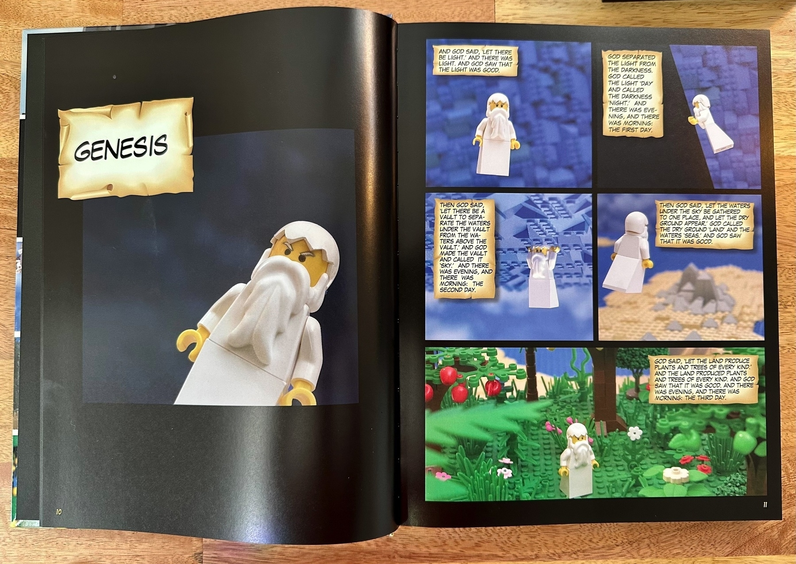

New Bible day! I heard about The Brick Bible and thought maybe it was an epic Lego set for constructing scenes from Scripture (I would spend enormous amounts of money on such a thing).
But it’s even better than that: it’s a complete Bible illustrated with 1,400 photographs of Lego scenes.

On Charlie Kirk and Saving Civil Society
Cal Newport writes the best thing to read on the Charlie Kirk assassination. Possibly the only thing to read. (It’s wonderfully short.)
Everything else makes me worry for, well, civil society in America.
Today, I left my hotel and walked to a train, which took me to the airport.
This sounds normal, except I’m in the United States, where “walking” and “trains” are often unavailable to me when traveling.
Of course, this is ATL, so now I get the all-too-common experience of waiting in line forever.
Just booked a tiny cabin in Colorado for a few days for Meera and me (and Tuck!). We haven’t done a retreat like this since last December, and it is way overdue.
Fiction: Gifted
My sister, aptly blogging at @QuilledSister, writes short stories on her blog. Read her stories! She is a good fiction writer. I am not. But sometimes I get inspired to write a response. This is one of them.
Original Story: Gifted
My Story
I try to make these stand-alone, but today’s story won’t make sense if you don’t read the original first.
BE NOT AFRAID, I said in my gentlest voice.
“HOLY FUCK!”
BE NOT AFRAID, STEVEN WINTERS. I began my litany again, three hundred and fifteenth time today. FOR WE COME WITH—
“HOLY. FUCK. WHAT THE HELL.”
Not Hell, little guy. Come on, just let me finish and you can freak out later. They told me this group was skittish, so I had decided to include the name up front, so they would know I was friendly. If I were mean, I would say, “Be not afraid, insignificant bug!” But I’m nice.
I’m on a mission from God.
STEVEN WINTERS, WE COME TO YOU WITH A—
“OH MY GOD. SWEET JESUS.”
Closer, Steve, but I really need to tell you something, and I have a lot more visits to make today. The days of arks are over, but we still need you to go to the mountains.
I looked around. “Use your environment to your advantage,” they had told me. Burning bush, ladder to heaven, star in the sky, but this was a suburban back yard, which means there must be a… yes!
Back to the human, who seemed to have noticed my eyes glancing about. I hope he didn’t think I was irritated at him for interrupting. Although, frankly, Steve…
It took a few more false starts. “AM I DEAD?” he yelled, dancing back and forth over the near edge of sanity, waving his tongs as if he were conducting an orchestra at an asylum. “HOW MANY LANGUAGES CAN YOU SPEAK?”
Actually, the surprising answer to that question is “one.” I speak proto-Babelish, a Semitic ancestor of the Sumerian/Hebrew/Akkadian family. Some call it the “language of Heaven,” but it’s more properly the “language of Eden.” Let’s not get into the “languages” “they” “speak” “in” Heaven. Steve’s not ready for me, and you’re not ready for theolinguistics.
If you could hear it, proto-Babelish is a pretty harsh language, full of guttural noises and glottal stops and also these absolutely glorious vowels that just go on forever. Makes it a perfect worship language. Obviously.
But you can’t hear it, because something about Created beings’ brains just ignores the sounds entirely. You hear noises—yes, I shake the air when I speak, just like you—but your brain interprets them in whatever language you’re most comfortable in, and you somehow ignore the dissonance of your ears and your eyes and your brain.
You’re good at that.
My best guess is that your brain somehow “remembers” proto-Babelish, but the Adamic corruption of the material world has destroyed your conscious ability to process it. So when you hear me speak, your brain kind of panics and retreats to its most primitive responses. Which is where the language of Eden is hiding in the first place, so what was lost gets found, and those with ears can hear. He has a weird sense of humor about these things.
Anyway, while we’ve been talking, I’ve been working on Steve and his gibbering not-madness-yet, and he’s been frantically cycling through a litany of half-remembered Sunday school lessons.
He’s about to land on an important one that happily coincides with both his upbringing and his current location, and if I’m lucky, the ancient ritual will calm him down so I can give him my message.
Ah, there it is.
YES, STEVEN WINTERS. WE WOULD LOVE A TUNA STEAK.

Today’s hike was coincidentally almost exactly 5k. My time of 1:33:16 is an awful 5k, but I blame the 1,150 feet of elevation gain rather than my lack of fitness for my pace.
Consuming Media in the Right Shape
In a recent episode of his “Bookworm” podcast, Mike Schmitz said,
If you are listening to a book, you have not read the book.
He doubled down in a newsletter titled “Time to Hit the Cognitive Gym” (which, amusingly and ironically, offers an audio version):
For example, I’ve long said that “reading” audiobooks is not actually reading. The audio keeps advancing without you having to wrestle with the message.
Mike is wrong.
Let me start with two powerful counterexamples that require us to weaken that claim, and then we’ll get more nuanced.
Counterexample 1: Reading Shakespeare’s Plays
Shakespeare’s plays were written to be performed, not read. However, almost all US students first encounter his plays as printed books. This format allows easier asynchronous classroom study, but it is obvious that if you are reading the play, you have not seen the play.
So in this trivial case, reading is not the best way to experience the work or “wrestle with the message.” Listening to the play being read would be better; listening to it being performed would be better still; watching a recorded performance another step up; and attending a live production the best possible format.
Counterexample 2: Rich Audio
My wife and I recently finished listening to The Situation Room by George Stephanopoulos. It’s a fascinating history of the situation room, the communication hub of the White House, which I always picture as the set from The West Wing—but apparently has almost nothing in common with that set.
We grabbed the audio version because we like listening on long car rides. We were surprised and delighted to learn that, while most of the audio is just Stephanopoulos reading his own book, the editor inserted actual interview audio instead of just reading the transcripts. The result is a much richer, more nuanced, and in many cases more emotional experience than reading the book could possibly have been.
So in this less-trivial case (an actual book, published as a book, not a play published centuries later as a book), reading is once again not the best way to experience the work or “wrestle with the message.”
Given the emotional content of some of the events the author recounts (the Cuban Missile Crisis, 9/11, the killing of Osama Bin Laden, and others), simply reading the printed page does not permit the reader to engage emotionally as well as the audio book does.
An Argument I’m Not Making
I’m not particularly interested in whether listening to a book “counts” as reading it, and that’s not the argument Schmitz makes either—he happily said on the same podcast that for a “gap” book (his and his cohosts' term for what they’re reading between books they read for the podcast), audiobooks work just fine.
The question is whether you need to read a book with your eyes to get everything out of it. Schmitz says yes, and I say that his claim is simplistic at best and often wrong.
Entire Genres Where Listening Is Critical
Most poems are probably better listened to than read (e.e.cummings being an easy counterexample; I can’t even begin to guess how you’d read aloud, for example, “Here’s a Little Mouse").
Songs, after all, are poems, and reading a song is at least as inadequate as reading a play—probably more so. Any genre or work, I would venture to expand, where assonance, consonance, rhythm, meter, or rhyme matters—would all be lessened by reading.
This category of works almost certainly includes stories from the oral tradition, where they are meant to be heard read or sung, not just looked at with the eyes.
Sure, sustained literary analysis of certain kinds requires reading, but “wrestling with the message” of a song or poem or oral saga absolutely requires listening. It would be ahistorical and insulting to claim that listeners to oral traditions like the Torah were not wrestling with the message.
The Strongest Version of the Argument
Given the counterexamples, let’s rephrase what Schmitz said to the strongest remaining version of the argument:
Reading is necessary to fully engage with or wrestle with the message of some works, but there are some works for which reading is insufficient, unnecessary, or both.
Now, Schmitz specifically said “books,” and I’ve expanded it to “works,” which may be unkind. He admittedly doesn’t really read fiction, and I would guess that extends to poetry; but as I showed with The Situation Room audiobook, he can’t be right about even all nonfiction books.
What I Would Have Said Instead
This post is too long already, so allow me to state the best version of this claim, which I think captures some of Schmitz’s intent while fixing his most egregious error:
Fully engaging with a work requires experiencing it in the format its author intended.
This version of the claim resolves Shakespeare’s plays as well as all or most songs, poetry, and oral traditions. It also allows us to affirm what Schmitz said for a specific set of works: the narrow subcategory of books whose authors wrote them specifically to be consumed as written works and not in any other medium. (Such a claim is strongest for academic texts, where the footnotes and endnotes are critical, or for certain authors like Edward Tufte where the visual presentation of the material is as much a part of the work as the words themselves; an audiobook of a journal article or one of Tufte’s works would just be silly, and nobody would argue that a listener to such a thing could engage much at all, much less fully, with the work.)
The only works I can think of that don’t fit this claim are those where the author would have preferred a different medium but was constrained: a book that should have been a rich audio experience like The Situation Room, but whose author lived before such a thing was possible or didn’t have the resources to create it; a poem that should have been performed, but whose author had to resort to weird punctuation to suggest tones or pauses because ubiquitous recording wasn’t possible.
Where Do We Go From Here?
“Reading” and “listening” (and “attending”) aren’t moral categories; they’re lenses onto a work. Some lenses reveal structure—citations, diagrams, exquisitely reasoned argument. Others reveal color—tone, emphasis, the crack in a witness’s voice. The important part isn’t eyeballs but attention.
Some practical rules of thumb:
- Honor the native medium. Plays, poetry, songs, interviews, oral histories? Listen. Textbooks, arguments, figure-heavy work? Read.
- Match your intent. The author’s intent matters, but so does yours. Studying to quote or to argue? Read, annotate, and expand on it. Seeking to feel the shape of a story or the weight of an event? Listen and sit with it.
- Mix and match. For consequential works (to you or to the world), do both. Listen holistically for context and emotion, then read deeply for precision. Or vice-versa: dig in with your eyes until you’re satiated, then sit back and let your ears give you a different perspective entirely.
Schmitz’s mistake isn’t valuing reading; it’s universalizing and absolutizing it. The right claim is far smaller but far truer: to fully engage a work, use the medium that best carries its meaning.
Or, more simply, if it was made to sing, let it sing.
Not what I expected from a post called “Ask the Algorithm”, but cleverly conceived and executed, and definitely funny.
I should put more pretty pictures on the Internet. Here’s a beautifully clear shot of the mountains over the middle school where I walked Tuck yesterday. I love that I can see mountains now on our walks. #nofilter, as the kids used to say.

Trying GoAccess for Website Traffic Analysis
I’m playing with alternatives to Google Analytics, because I pretty much only look at one or two charts.
First try: GoAccess.
It lives on your server and reads the nginx logs directly and produces very nice graphs. There’s a live terminal interface or you can produce HTML files. It even tries to segment out crawlers for you (but it doesn’t subtract them from your visitor count, so you have to do some mental math).
Update: there is an --ignore-crawlers command-line option, but I don’t want to ignore them, just segregate them. It’s interesting to see what bots are hitting and when and how much.
Biggest irritation so far: since the generated HTML page does no date filtering at all, you have to filter at the command line. Fortunately, the manual gives you specific examples of how to do that, so I’ve written a script and set up a cron job to produce HTML pages for the last 1, 7, 30, 90, and 365 days (yes, five different HTML pages) and put them somewhere I can look at them.
I’ll leave this enabled for a while and see how I like it. Next up: Plausible’s free (self-hosted) tier.
Amusingly, ChatGPT on my phone has updated to GPT-5, but the Mac app hasn’t yet, which means that continuing a conversation between the two devices always means swapping models mid-stream.
Today’s Bracket City includes the amusingly redundant clue “companion for bread, often.”
“Companion” literally means “with bread.”
Com- = “with” panis = “bread”
Reading more #OnThisDay, it seems like the beginning of July 2023 changed how I thought about writing, from something I should do to something I do. I can watch my two-year-old self move from reading about systems of writing to putting them in place and then following through. Good job, 2023 Jerry!
Reading More and Writing More
Two years ago today (July 5, 2023), I wrote in my daily reflection:
I’ll tell myself again that I need to read more and write more. I can do it.
Since then, I’ve published:
- 11 articles totaling 44,506 words
- 14 short ebooks totaling 57,738 words
- 1 long ebook totaling 7,828 words
- 50 newsletters totaling 52,781 words
- 3 micro-fiction stories totaling 2,459 words.
That’s 165,312 words from my fingers to the world in 24 months.
I was curious about my ratio of writing to publishing, as well; this count isn’t perfect, but it looks like I’ve written about 774,231 words1 in those two years, roughly 1,060 per day2.
Obviously, some days are wordier3 than others; I happen to see that March 16, 2025, was a wordy day: 4,276 words. And June 6, 2025, was a less-wordy day: 274 words.
What I haven’t said yet is what changed to drive those numbers up: I added a daily morning pages practice to my life. My first entry is July 7, 2023, just two days after that quote at the top of this post. Since then, I’ve written morning pages on 119 days (about one in six days), but after a slow 2024, my 2025 pace has been better than one in three.
I hate to say it, but the “secret” for me was a) putting a system in place that encourages me to write every day (my Obsidian daily note creates a new Morning Pages task) and b) giving myself an inexhaustible list of prompts (selected from Internet lists of prompts; my own brain; and asking LLMs for suggestions).
Who knew.
Here’s to twelve more months. 🥂
-
Outside of my day job. I cannot begin to imagine how many words I’ve written for work, but those aren’t the words I’m interested in counting, no matter how much I’m intrigued and/or distracted by the idea of a script that can count all the words in my Sent and Proposals folders over the last two years. ↩︎
-
If I were a full-time writer, that would be 1,489 per weekday, roughly 75% of Stephen King’s self-reported daily output; but of course I am not, so almost all of my writing is done on evenings and weekends. ↩︎
-
I originally wrote “more productive,” but I have no idea: maybe zero of those March 16 words were published, but all 274 of those June 6 words were. And what if I had to write all 4,276 of those words so I could get them out of my head and throw them away to make room for better ones? ↩︎
Went to see the F1 movie yesterday with Meera.
As an F1 fan, the cameos and references and locations were fun, and imagining how they filmed that movie was fascinating.
As a movie fan, it was a big goofy fun energy-filled summer flick that isn’t, and doesn’t pretend to be, particularly good. 🍿
Playing with plotly tonight, I built one of the cooler visualizations of the Bible I’ve ever seen.
This is a treemap based on the word count of every book, separated by testament and then section. The colors also indicate book length, from dark blue (very long) to dark red (very short).

I’m going through the HuggingFace MCP course, and in Unit 1 I’ve learned you can build and deploy an MCP server/app to HuggingFace directly, for free. Here’s my tutorial one that does sentiment analysis.
Wild.
_Office Space_ Prescience
Rewatching Office Space tonight, and I’ve caught two call-forwards.
- When Peter is trying to avoid Lumbergh on Friday, it’s surprisingly similar to Neo’s hiding from Agent Smith at the beginning of The Matrix, which came out 40 days later.
- Peter asks the occupational hypnotherapist to make it so he didn’t know he was at work, while he was at work. Which is the entire plot of “Severance”, released 23 years later.
Every once in a while, I “edit” a ChatGPT prompt without changing it just to generate a new response. Sometimes the new one is similar; sometimes not.
I should try more often to run the same prompt a few times and evaluate the responses for myself, rather than assuming the first one is best.
Going through the HuggingFace MCP course to learn a bit more about it—and maybe actually use it for some projects—and I was already briefly stymied by the difference between a “resource” and a “resource template.” The example code provides a resource template, which is in a different part of the UI.
Fiction: Lament
My sister, aptly blogging at @QuilledSister, writes short stories on her blog. Read her stories! She is a good fiction writer. I am not. But sometimes I get inspired to write a response. This is one of them.
Original Story: Lament
My Story
I knew her the moment she walked in, of course. Her glamours are literally the source of the word, but she has absolutely no tolerance for error. When a woman that perfect enters your bar, you’re in danger.
So I kept on serving the three girls who’d been there all afternoon. They’d started with mimosas at lunch and just kept going. They were easy money for someone like me—a smile here, a wink there, keep the sleeves rolled up just enough that they could see I’m mostly muscle—and I was sure my bed would be warm tonight. It almost always was.
The man in the leather duster kept staring at me like he knew something, but didn’t quite know what. He stared at the beer, too—a brown ale, served too cold at his request—and didn’t say much.
The woman took an easy seat at a table, speaking low to one of our waitresses, presumably a drink order.
I was still trying to work out what she could possibly order when she stood up to take the stage. Tuesdays are spoken word open mic nights here at Goodfellow’s, and it was always fun to see who worked up the courage to walk up front and pour out their notebook into the mic.
Always some English majors, and some wannabe English majors, and some dropout English majors. Sometimes one of the overachieving STEM kids who couldn’t stand not being good at everything. Usually a few loners who really did want to be poets.
No one like this had ever taken our stage. Every eye followed her—mine included. How could you not stare at that perfect ass?
I don’t mean Venus de Milo or Jessica Alba or Flo-Jo. I mean, the cosmic ideal of ass. Yes, her heels were stunning, as were the legs they supported. Somehow even the muscles of her back through the blue off-shoulder top were captivating. And her shock-white hair competed for attention with her sinuous neck. But that ass… one flexed buttock could have sent the whole room into an orgy.
She didn’t, of course. Her control was total.
Her voice was what surprised me the most. It sounded… normal. Almost relaxed. When you’ve known her as long as I have, you kind of get used to the intense radiating power of her voice, even when she’s speaking in a whisper.
But tonight was like she’d found a new gear. A lower one.
Good evening ladies and gentlemen. Tonight, I want to give a longwinded shoutout to my man, Mercutio.
ahem…
She did not need to clear her flawless opal-jeweled throat.
She’d been practicing.
I was in trouble. We were all in trouble.
Could steal your girl But he doesn’t want her, Tarnish his honor But don’t squander the love scholar. The original bad bitch A casual curse witch…
Her poem wasn’t great. I mean, it was delivered with the kind of vocal skill usually reserved for EGOT winners and Morgan Freeman. But the Bard she ain’t.
Not that it mattered; between her body and her voice, I’m not sure anybody but me could hear the words. Well. That guy in the duster—something told me he didn’t miss much.
She finished, accepted the polite applause and ubiquitous catcalls, and glided to the bar.
I turn on the charm, playing up the part of bartender, hoping she’ll leave me alone. Believe me, you don’t want her attention.
“What’ll it be, my rhyming mademoiselle?”
That’s the ticket, overboard on the flirting; nobody in their right mind would flirt with her.
“A friend of mine recommended something, but I can’t quite remember the name,” she purrs, leaning in more than necessary, “it’s a bubbly one, with a country in it.”
Dangerous. She’s just as dangerous from the front as the back—more so, with those damn eyes—and she’s leaking power. She must have enjoyed herself up there to slip like this. I feel myself drowning in her, and only centuries of practice and a wrenching act of will keep me breathing.
“A whole country? I don’t know if I can fit that in a glass,” I say as I pray she’s too distracted to notice my brief hiccup. Probably every male she’s ever met has had that problem and she’s used to it. Every female, too.
I start making the drink she’s obviously referring to as she politely chuckles at my joke.
We are playing a terrifying game. One that I can’t win. Only survive.
Out of the corner of my eye, I see the man in the duster suddenly attentive to our conversation, a hand reaching below the bar. Stay calm, man, you can’t handle this one.
“You’re looking for a French 75, I believe,” I say, sliding it into her hand and winking.
“Yes! That’s…”—she starts her next rehearsed line a moment before realizing that I’ve skipped a step and already given her the drink.
Not smart. I should have played along. But I couldn’t help myself. It’s who I am.
“I’ll be back to hear how perfect it is,” I croak, and race back to those giggly girls, suddenly desaturated in comparison. At least none of them will kill me in my sleep.
I wait for her to take a sip, appearing to focus all my attention on the ladies in front of me. The moment she turns back to the bar, I’m in front of her. Can’t leave her alone for long.
“You’re becoming a bit of a regular,” I venture, thinking she might take the bait and tell me what the hell she’s doing here. Again. “I can add you to the local’s tab lists if you’d like. Gets you, ah, 10% off on Thursdays.”
A vulpine look fades as she finishes turning from studying the crowd, identifying and dissecting my hook, analyzing the opportunities, and eventually deciding not to play tonight.
“Sure, put me in there, big guy.”
Well, nothing ventured, nothing gained. One more try.
“Lucky for us! And what’s the pretty name of the pretty lady?”
She answers, and the power of her answer rocks me back a bit. I stutter, pretend I couldn’t hear over the idiot up on stage.
“Mag? As in Maggie?”
Please don’t say your name again.
“Mab, my dear Puck. As in Queen.”
Shit.
Once again, this Minaal bag is the perfect one-bag traveler.
I got like six free books at Craft + Commerce 2025 this week, and somehow they all just fit alongside a week’s worth of clothes + rafting gear.
In heavy competition with my Bluffworks Gramercy suit for best travel purchase ever.

Last work trip let me add two new countries to my where I’ve been page:
- 🇦🇹 Austria
- 🇨🇿 Czech Republic
A birthday present from my brother just arrived. They are “catch-alls” branded with Meera’s and my online brands—VerseNotes for me, Savvy Hedgehog Adventures for her.

US Preclearance
Yesterday I had a novel and wonderful experience: “US preclearance” at the Dublin airport. I cannot believe I’m describing a TSA/CBP experience as wonderful, but it was great.
The theory is that you go through US immigration and customs in Dublin so you don’t have to do it on arrival in the US.
The reality is… exactly that. Global Entry in Dublin was fast (and extant, which was delightful), and I just walked off in Denver directly into Terminal A.
I’ve never had issues with immigration in DFW (my most common port of entry), but wow this experience felt magical:
- Because you’re doing immigration at your own pace during a layover, there aren’t multiple airplanes worth of people fighting to get through at once.
- At the end of a transoceanic plane flight, I’m typically tired, cranky, or both. Getting into the airport instead of a bureaucratic queue at that point is tremendously relaxing.
The only downside was the lack of a PreCheck line in Dublin. I haven’t had to take off my belt and shoes and watch for many years.
I can’t believe I just now noticed that the named MEs in The Dresden Files are “bread and butter”:
“Nothing on the autopsy. They didn’t give this one to Butters. Brioche handled it, and he didn’t find anything out of the ordinary.”
Proven Guilty
Once again I have learned that, in Europe, it almost always pays to wait for a human for long-distance train ticket plans.
I just got a cheaper, faster, nonstop reservation for a journey I thought was going to take at least one change and an additional hour.
My brain is so attuned to feeds on my phone that sometimes I literally forget that I own libraries of digital books (sadly split between Kindle/Apple because of sales+silos; my kingdom for… Del.icio.us?!?!).
I may need a no-feed cleanse to remember how to read.
VerseNotes Bible Reading Plan Generator
Just published this weekend’s project, an automatic Bible reading plan generator for VerseNotes.
Features
- Select length of plan (e.g., 90 days, 1 year) or daily reading time (15 minutes/day)
- Select what to read (whole Bible, OT, NT, Gospels)
- Select whether to read straight through or get a mix of OT/NT/Gospels/Psalms each day
- Select grace days per week or per month (free days to catch up or to reflect if you’re already caught up)
- Select starting date
Once you’ve built the plan you like, you can print it out easily or bookmark it/share it with others using the Copy Link button.
Build Note
The piece I’m proudest of is the dynamic update of what you’re getting yourself into. As you change parameters, you get an instant calculation of how long you need to read each day OR how many days it’ll take to finish your plan.
Check it out and let me know what you think!
Why I keep dropping notes into Obsidian: I just referred to sermon notes from 2019 for the article I’m writing.
Verse Clock: Scripture for Every Minute
A fun toy I built over the weekend: Verse Clock.
A reader asked whether you could use my table of chapters, verses, and words to come up with a verse for every minute of the day (e.g., John 3:16 for 3:16pm), so I spent a few hours coding it up and voilà, a verse for every minute (well, 1,355 of them; there are 85 hour-minute combinations that cannot be mapped to a chapter-verse in any book).
If you don’t like the displayed verse, just click “Current Time” again to get a new one, or just wait a minute—it’s a functional clock you can leave open if you want. You can even switch between 12-hour and 24-hour time.
Finally, you get a link to the whole chapter so you can read the verse in context, and if I have chapter notes available for the book, you’ll get a link to them.
This was a fun and quick tool to build; I’m looking forward to the next one.

Meera and I both did this hike today, though not together: she did morning and I did afternoon. The first 2.5 miles were brutal both times (1,250 feet gain, an average 9.5% grade).
I am proud of us.

My travel schedule for May is absurd.
- May 1–3: SAT
- May 5–8: DTW/DFW
- May 11–16: DTW (again)
- May 25–June 1: VIE
Days at home: 11 of 31.
Remind me never to do this again.

Fiction: Fatigue
My sister, aptly blogging at @QuilledSister, writes short stories on her blog. Read her stories! She is a good fiction writer. I am not. But sometimes I get inspired to write a response. This is one of them.
Original Story: Fatigue
My Story
She was old, these days. Not that you’d know it to look at her. Fewer did, too, these days, but she supposed that was to be expected. It wasn’t the streak of gray she kept carefully hidden out of respect for the bartender, who was still denying the existence of hers. It wasn’t the remnants of a bright pink applied in a fit of misdirected youthful energy—not hers, this time; that waitress had been removed the next day, along with as much of the pink as she could.
No, fewer people looked at her because fewer people looked for her. Didn’t they know what she could do? How she had stocked everything just so, using local ingredients wherever she could, but sending out across the world if she ran out of options. How she had brought in only the very best bartenders, the ones who understood what she was trying to do here? The ones who didn’t question when the six-foot-nine thug got a peach mangonada, the alluring goth chick got a single finger of whiskey (neat, but always slightly pine-flavored) for the third time this month, or the Clint Eastwood wannabe got—well, he got a finger of whiskey, too, but without the pine.
Ms. Harliot poured another drink, a tea for a man in a black bowler who could have been from the 1920s or the 2020s, a tea with perhaps a little too much matcha for a true connoisseur, but which he would only remember as delicious. The O’Harliots—they lost the O in those same 1920s when Ellis Island would let the Irish into the country but New York wouldn’t welcome them any further—had always been her favorite bartenders, even back to the first grandame O’Harliot who carted her around by hand before she had found a permanent home. No cockles or mussels, but they all got what they needed.
Every couple of decades she tried out another family, someone promising, someone who had been in before, maybe a few times. They’d last somewhere between a few hours and a few years, and then she’d find herself reaching out to another Harliot cousin who inexplicably found themselves staring at the labels above the bar, realizing that if they just mixed a little of this with a drop of that, the lanky boy who’d been staring into the middle distance since he took a seat against the wall an hour ago would feel a little better when he left.
They all felt a little better when they left. (Most of them felt better on their way up to the bar.) A little lighter. A little… like maybe that weight wasn’t quite so heavy today. Almost as if the emotional gravity in here were a little weaker than it had been on the doorstep.
As he left, the thug almost forgot he was carrying—almost forgot why he was carrying.
As she walked out, the woman with lustrous black hair, a bit too much eyeliner, way too much (or maybe too little) leather, and skin a whiter shade of pale didn’t think of those girls once. Or those guys. She thought about a bass guitar and the boy who played it.
As he retreated, the man with the painstakingly manicured five-o’clock shadow didn’t think the word “emasculated” once.
The awkwardly tall boy had left years ago, trench coat waving in the wind, a bit worse for wear but looking forward to graduation for the first time in his life.
She could do this forever. She’d been doing it for years, and she’d keep it up until she couldn’t any more. She could feel Christina—sorry, Ms. Harliot—feeling her age, feeling the world, but she could also feel a man who had just turned up her street, fuming about his ex, his lawyer, his ex’s lawyer, the judge, the clerk, and every happy man, woman, and child he’d seen in the last three weeks…
The Grudgery was old, these days. Not that you’d know it to look at her. But the people who needed her found her, looked at her, looked again, stepped across the threshold, and, invariably, felt a little lighter.
When you haven’t been to Japan since January and you don’t care that Southlake sushi can’t possibly be any good…

_A Psalm for the Wild-Built (Monk & Robot Book 1)_ by Becky Chambers
Finished reading: A Psalm for the Wild-Built (Monk & Robot Book 1) by Becky Chambers.
This is the first book on my #TheologyOfRobotics reading list, which is expanding rapidly. A great fiction exploration of planetary stewardship and the relationship between humans and robots. Definitely fantasy, not sci-fi.
Ultimately, the book is about purpose—having one, finding one, whether you need one, whether just being is enough.
It’s quite opinionated, as it paints a rosy picture of a post-industrial society that reached an unnamed cataclysm and had to convert the entire civilization to a state of greater harmony with nature. It doesn’t mention any of the violent politics that would have inevitably arisen regarding any undertaking of that kind or magnitude, regardless of its necessity. The humans left alive are depicted as unfailingly virtuous. All this in a quest for answers about stewardship of resources, of place, of planet, of people. The main character begins as a gardener, moves to what passes for a therapist, and finally goes adventuring in search of purpose.
Interestingly for my study, it literally depicts a robot that has theology! The theology is presented as fact by both human and robot. But when you step back, it’s not necessary that the robot be a robot for the story to work. The robot has abandoned everything that would otherwise differentiate it from humans: it has “parents”, it is not immortal, it does not really repair itself. It could easily be a human member of a remote tribe that happened to speak the local language, and I tihnk nothing would actually change. So… good questions, but not specific to robots, I think.
📚
New travel record, I think: my flight from DTW-DFW started boarding before I got on the rental car shuttle, and I am currently on the jetway.
Previous record was SAT, where the flight technically started boarding before I got on the parking shuttle, but it ended up delayed, so it counts less.
The Denver airport invites me to return again to San Antonio (I declined).
I wonder if other travelers see that sign and wish they could change their flights the way I do when I pass gates for other cities.

Today’s hike: Lookout Mountain Trail outside of Golden. A beautiful first half, super weak second half. Still worth it.

Arrived at Breckenridge Brewery just in time to see the Derby run.
It’s our first time here, and it’s a glorious madhouse of kids and dogs and beer.

Visited a brewery last night that I’d never heard of—Free Roam in downtown Boerne. It’s amazing what happens when you treat your “home” city as a destination. There’s probably something to that…


We moved to Colorado for the summer for the hiking. Today was just a long walk, but here’s to lots and lots of these in the next three months…

Fiction: Mislaid
My sister, aptly blogging at @QuilledSister, writes short stories on her blog. Read her stories! She is a good fiction writer. I am not. But sometimes I get inspired to write a response. This is one of them.
Original Story
My Response
It was always the same. A trudge down a clean, brightly-lit path, a longing gaze up at the dead thing as if it could somehow hold the warmth that the living thing once had.
People are weird that way, I’ve noticed. They have all these memories of something alive—a father, a sister, a lover, a dog—and yet instead of sifting the memories to find the love they believe has left, they look at dead things instead: drawings, statues, tapestries, as if somehow the pressed and dried trees or rocks or wool marked with crushed flowers and snails have some sort of meaning that their own spirits don’t.
At least this one can tell the difference. I watch them inspect a marble face that isn’t right and dim stony eyes that never held light, clearly comparing the vibrance of memory to the icon of legacy.
Should I tell them? They’ve believed so long they probably wouldn’t understand; that’s another thing I’ve learned about people. They get an idea in their heads, and then they make choices based on that idea, and then they make choices based on those choices, and soon it’s impossible for the idea to have been wrong. They call it “belief,” which I suppose is as good a name as any.
But I shall tell you, since this one seems lost in thought staring at that door again.
There was never a chosen human. Thousands of years of “prophecy” of a Chosen One from a people that believed they were just barely younger than the dust of the ground. There’s that belief again; would it matter if they had all been born just as the latest war was starting? Was it important that they be old?
(They are not old. I am old, although there are many who would laugh at my youth. But this isn’t about me.)
There is a land, they say, where the people climb up mountains for fun. Just to do it. And in this land is a particular mountain that is the tallest. And as if there is more to see at the top of the tallest mountain than there is in a cup of hot tea, these people climb it.
It turns out they’re quite bad at it. Their lungs are not adapted to the altitude, and their fur is too thin and light for the cold, and their legs are really meant for distance running, not mountain climbing. For one thing, their knees go the wrong way.
But there are some other people who live near the mountain, whose lungs and hair are adapted for the mountain (although their knees still go the wrong way). When they climb the mountain, these two groups always go together: the adventure-seekers and the locals.
When they get to the top, who has climbed the mountain?
The one who saw it as a triumph to be achieved? Or the companion who made it possible to accomplish? The latter would never have left their home without the former; the former would never have reached the top alive alone.
Now that I’ve told you this fable, and you are to them as I to you, what prophecy would you write of these opposites who go up in the cold? Light and dark, thin of hair and rich of mane, backward of knee and—seriously, if you want to climb a mountain, look at a goat. Which way do their legs bend?
Anyway, I wrote that prophecy, and I said there would be a Chosen One. And there was. But who is to say which was which? The one who is dead or the one who mourns the dead thing by staring at a rock?
Their lives cannot be pulled apart any more than the threads of the tapestries depicting them could be unwoven and the image still stand. Their prophecies are not just intertwined, they are the same.
But for some reason, this allegedly wise old culture decided in the unremembered past that there can be only one, and they believed it so hard that they made it come true.
Well, sort of. One is remembered, and one remembers.
Humans are weird that way.
Finished reading: On the Hippie Trail by Rick Steves
An exuberant diary, apparently lost for four decades, of Rick Steves and his friend Gene traveling overland from Istanbul to Katmandu. This trail is likely impossible today, but the journey was inspiring—let’s go traveling!
📚
Finished reading: Tiny Experiments by Anne-Laure Le Cunff
A series of interesting insights about building the life you want through small experiments. I particularly appreciated the concrete suggestions: make a pact, join a community, learn in public.
📚
Coffee and yogurt on our first morning in our new place in Denver. It’s a bit chilly outside, which is glorious.

Via Reddit: this absurd story of a German fighter pilot in WWII guiding a heavily damaged Allied B-17 bomber to safety.
Read to the end for a wonderful capper.
Stopped for dinner at the Toppled Turtle in Dumas, Texas, which is halfway between Amarillo and nowhere.
The brewery is attached to a great pizza place though, so we had an excellent stop.
(Also, the local cats alternately sit on the bar and beg for pizza.)

We’ve been back “home” in San Antonio for two weeks.
It’s been amazing to hang out with our friends, most of whom we haven’t seen since before Christmas. But being here has been weirdly disruptive to our routine, because we knew we’d be leaving again soon.
Looking forward to re-establishing rhythm.
Today I noticed that Harvey Guillén, who plays Guillermo on What We Do In the Shadows, plays a demon hacker in The Good Place. The demon hacker who finally gets into The Judge’s mainframe, no less.
I do not often catch these things, so I am always delighted when I do.
Finished reading: The Formula by Joshua Robinson, Jonathan Clegg
For a new fan, this book was a great history lesson of the business of F1 and the transformation since 2017 or so, culminating in the insanity of the inaugural Las Vegas Grand Prix.
📚

Packing up to leave Salt Lake City for the summer. It’s been an unexpectedly lovely experience, and we’re already looking forward to coming back when the snow starts falling again.
Inside the Straight to Ale brewery at the aforementioned repurposed school is a monkey hanging on a rocket.
That is all.

This is the second school I’ve seen repurposed into a brewery. It’s not as cool as Idlewild in Colorado Springs, but the idea is still awesome.

I have really, really been enjoying bracket.city. What a clever and engaging game.
[Bracket City] March 15, 2025
☠️ hard mode!
Rank: 🔮 (Puppet Master) 🎹 Total Keystrokes: 105 🎯 Minimum Required: 105
Total Score: 100.0 🟪🟪🟪🟪🟪🟪🟪🟪🟪🟪
I missed good Southern food in San Antonio, and even more so now in Salt Lake City, so since I’m recruiting this week at Auburn, I have to take what I can get.
It’s not Carolina, but it’ll do.

À la @QuilledSister,
- Reading The Epic of Eden by Sandra Richter. So good.
- Writing Psalm 105 lists 8 of the 10 plagues of Egypt, but puts 9 first and swaps 3 and 4. What the heck?!
- Drinking A 2008 Barboursville Cabernet Franc. Unbelievable that this thing lasted 17 years. Soft, but amazing.
These stories should concern all Americans because they are our family members, neighbors and friends. No American can be proud of a government that carries out change in this way. Neither can these actions be rationalized by discussion of past grievances or appeals to efficiency. Everything can be more efficient, but adherence to the rule of law is paramount. We must be cognizant of the harm being done by these methods.
From The ABA supports the rule of law
The ABA isn’t above reproach itself, but this comment captures a critical part of any conversation going on around Trump-Musk-DOGE.
Today’s Apple News Quartiles puzzle is full of NFL teams (sort of): Ravens, Bills, Rams, Chiefs, Lions, Eagles (“birds”)—did I miss any? #superbowl

Finished reading: Eldest by Christopher Paolini
I didn’t realize until the afterword that Paolini was only 21 when Eldest was published. What a masterwork for someone so young, and yet it explains some of the inelegance of plot elements and prose. I almost recognize some of the flaws from my own high school attempts at fiction (none of which, obviously, were published).
A fun continuance to the first book, this time with way too much deus ex machina and Marty Stu going on. But for what it is, an entertaining read.
📚
Time travel accomplished! I have landed in LAX seven hours prior to taking off from HND.
I know it is routine, but it amuses me every time.
Finished reading: 1633 by David Weber.
The addition of David Weber got us even more Mary Sue/Marty Stu characteristics, but at least there’s some serious risk in this one, with some major players stuck in England under Charles II, Amsterdam under siege, and Scotland for reasons I don’t understand. Also a shooting war with the Americans’ fancy new weapons. It goes—well, some of column A, some of column B, lots of explosions.
Still, the story is wonderful if you can maintain incredible suspension of disbelief.
📚
Finished reading: 1632, Second Edition by Eric Flint
A rollicking alternate history with a thousand characters, most of whom can do no wrong. Serious divisions between heroes and villains, and an awkward writing style to boot.
But super fun if you can get past all that. I’ll be reading more.
📚
Caught up on some book posts. Probably will look like I’m cheating on my 2025 goals, but most of the recent ones I did actually finish this year. I’ve spent a lot of time on planes.
Finished reading: Iron Flame by Rebecca Yarros
I almost don’t want to admit I read this book. But I did. The story is fascinating.
But the writing continues to be without expertise. Yarros forgets she’s writing fantasy, or she just didn’t build a big enough world, or something. And the main character, a special magical girl who really only had one flaw in the first place (some physical weakness), appears to have lost even that—or, more likely, Yarros forgot that too.
The dragons continue to be awesome.
📚
Finished reading: The Book Thief by Markus Zusak.
This book about a girl growing up in Nazi Germany in 1939 is hard to get into. It is absolutely worth the patience.
I don’t want to write anything else for fear I might spoil it, except it is one of the very few books ever that has brought me to tears.
When Death has a story to tell, you listen.
📚
Finished reading: Eragon by Christopher Paolini
After Fourth Wing I decided I should go back to an older and wiser dragon novel. And yep, it was fun! Less sex, but more more wisdom, and no hokey failures to remember the fantasy realm is not the modern US.
Can’t say it was the best novel I’ve ever read, and it’s got all the standard Lord of the Rings cliches about a young man with an older mentor who turns out to be phenomenally powerful (maybe that’s more Star Wars than LOTR), but I love the slow build to an epic battle, plus the weirdo side characters that keep popping up.
📚
Finished reading: Countdown 1945 by Chris Wallace.
A fascinating, if a bit too prone to run down rabbit trails, look at the 116 days between Harry Truman becoming president and the United States dropping atomic bombs on Japan.
Maybe the most stressful time any President has ever had, although Washington, Lincoln, and Kennedy probably have some feelings about that.
Excellent narration, good structure, tons of info, highly recommended.
📚
Nice hike up Mount Takao, about ninety minutes’ train ride west of Tokyo Station. Beautiful views, shrines, a temple, and a waterfall!


Reclaiming my voice without losing my soul – joshuamcnall.com
Insightful thoughts on the challenge to be “in the world, not of it” in the age of 24-hour news cycles and The Algorithm. I feel this challenge quite deeply every time I sit down to write.
I don’t usually eat conference food, but the opportunity to sit atop Tokyo Big Sight and eat ramen was too good to pass up.

I would like an iOS addition to Focus Modes where I could “mute the muting” for a selected event.
Example: I want to stay in Do Not Disturb, but alert me on the next text from this contact, even though they are not white listed for that focus mode. Or “for an hour” instead of “next text.”
On the way home from Jackson Hole today, we accidentally found Grand Teton Brewing in Victor, Idaho, just over the pass from Wilson, Wyoming (where it turns out they started in 1988 as Wyoming’s first microbrewery).
As we had no schedule for the day, of course we stopped.

Two sort of opposite pictures from Jackson Hole today. One of a man made structure—a cute little cabin decorated with skis—on the side of a mountain; and the other a family of mule deer who decided our little townhouse complex was a good dinner spot.


Last summer, we backpacked in Grand Teton National Park. Today is our first day skiing Jackson Hole. This is a great, and beautiful, part of the country.

I assume I will eventually stop taking pictures of the natural beauty of Salt Lake City, but I don’t predict it will be soon.

Skiing Alta
I haven’t been to Alta since the first time I came to Salt Lake City to ski several years ago. At the time, I was just re-learning how to ski 10 years after basically quitting cold turkey when I took a job in Texas after college.
We went today, and it was glorious. No traffic, easy parking, nearly empty lift lines, zero snowboarders, and an amazing mountain to ski on.
The thermometer says 8°F at the top of the Collins lift; it was cold, but it didn’t feel like single digits. I’ve been at Big Sky and Copper when it was single-digits, and I felt much warmer today.
Now if only our Ikon pass gave us more than 7 days there…


When I was collecting data for my 2024 health and fitness review, I couldn’t figure out how to see how many times I hit my daily exercise goal.
Turns out it’s in Trends→Exercise in the Fitness app, all the way at the bottom.
Now I just need to remember that 364 days from now…

À la @QuilledSister,
- Reading The Epic of Eden by Sandra Richter. Again.
- Knitting Uh-oh, I am not knitting anything. I am writing about the phrase “for his steadfast love endures forever” in the Bible.
- Drinking Our Share IPA by Wasatch


Apropos of doing better with physical health this year, I managed to get three days into 2025 without a workout, until yesterday. Here’s to way more of these this year!

2024 Review: VerseNotes
After my family and my job, the thing I spent the most brainpower thinking about in 2024 was VerseNotes, which I’ve been writing since August 2018.
This year marked a huge turning point, as I published the very first VerseNotes products and made the very first dollar I’ve ever made online, and then a few more. VerseNotes currently represents about 0.02% of our income.
Let’s first review what I did, then the results.
- I wrote just 3 new articles, two in January and one in July. Total words: 3,938.
- However, I published 183 new chapter summaries in Chapter By Chapter, including the end of Luke as well as all of John, Leviticus, Numbers, Deuteronomy, Joshua, Acts, and Judges. Total words: 20,347.
- I passed 1,000 email subscribers on December 29, just eking out the win at the end of the year, my third year in a row of more than doubling the list size. Total words: I don’t know how to count words in emails in Kit.
What were the consequences?
- Unique visits: 99,625 (up 201.5% from 2023)
- Revenue: +∞%
The most popular page continues to be a data dump of A List of Books In the Bible By Number of Chapters, which includes numbers of verses and words as well, as well as some superlatives. Its traffic increased by 170% from 2023.
The fastest-growing page, unsurprisingly, is the Chapter By Chapter main page, up 267% from 2023. Unsurprising because it got by far the most attention this year.
Along with physical health, VerseNotes is one of my two themes for 2025. I’m excited to see what happens.
2024 Review: Health and Fitness
2024 was (apparently) not a good year for physical fitness for me. We got in a lot of good skiing and one backpacking trip (to Grand Teton National Park), but otherwise I apparently didn’t do much to keep myself alive. This post is a bit embarassing to publish, unlike the last three, but I’ll try to use that as motivation to do better.
- Daily active calories up 3.1% from 2023, but down 9.6% from 2022.
- Daily average exercise minutes: 31, which is above my goal and way higher than 2023 (+29%), but remember that’s an average. I only hit my goal 101 times in 2024. (So how did I average 31 minutes? Full days of skiing and hiking!)
- Exercise
- 72.27 miles of walking (down 42.4% from 2023 and 58.9% from 2022), although about half of these miles were done wearing a backpack with a 25-pound weight, so it’s slightly more valuable walking.
- 37 yoga workouts (up from 20 in 2023 but down from 48 in 2022), although this included for the first time two outrageously hard aerial yoga sessions with Meera, which I’d like to do more of.
- 27.39 miles of hiking (down 51.6% from 2023). The biggest difference here is that when we went to Ruidoso after Christmas last year, we went hiking every day; this year, we were just passing through on our way to Salt Lake City, and we did no hiking at all.
When I did Shawn Blanc’s Plan Your Year exercise during our December retreat, one of the two themes I came up with for 2025 was physical health, although I hadn’t done this summary yet. Now that I have, I know I made a good choice.
2024 Review: Finances
It’s hard to talk about finances publicly, but it’s an important part of an annual review. That said, as I wrote this post, I realized I wasn’t comfortable talking about this publicly after all. But two parts I am comfortable with: investments and giving.
Investments: We invested 8.1% more than 2023, excluding our maxed-out 403(b) contributions. I felt good about this number, because we also bought a car, which substantially ate into our ability to invest on our planned schedule.
Giving: We gave 16.7% more to charity than 2023, which now represents 5.1% of our gross income (up from 4.7% last year). (What do I think about that? On one hand, 5.1% is less than 10%, which makes me feel like we ought to do more; on the other, the tithe is an Old Testament concept, and Paul says in 2 Corinthians 9:7 that we should give what we feel called to give. The absolute number of dollars is significant, and we can see it’s not only growing but growing as a percentage of our income, so I’m comfortable with it for now.)
2024 Review: Reading
Reading is actually first on my personal review of each year, but I wanted to play with the photo collections, so I started with travel. I keep an up-to-date list of books I’m reading and have read, but here’s 2024 for posterity, or something.
I hit 21 of my goal of 24, although it’s possible one of them (The Law by Jim Butcher) doesn’t show up on micro.blog for some reason, so the below list will only have 20.


2024 Review: Travel
Next step of 2024-in-review is travel. Flighty has some cool visualizations, which are a good excuse to try the new image collections feature.


I actually did less flying this year than last year, despite trips to Tokyo, Milan, and Luxembourg (via Paris). My totals for the last four years:
- 2024: 65,054
- 2023: 91,050
- 2022: 62,332
- 2021: 32,503
- 2020: 17,874
We also did a substantial amount of travel by car this year, almost entirely in December: we drove from Texas to Virginia and back for Christmas, then from Texas to New Mexico and up to Utah to our new home for the next three months.
Doing some 2024-in-review this weekend. First step: update my /now page.
Finished reading: Rocket Men by Robert Kurson
The success of Apollo 8 is one of the biggest achievements of American spaceflight, or possibly all human spaceflight. I love space stories, but I knew Apollo 11 and 13 far better than this one, so we listened to it on the way to Utah.
The story deserves a better author. This seems to be a theme with me recently: wishing that amazing stories had been told by better writers, or better editors maybe.
Kurson tells the story with excellence, but only most of the time. The weaving of biographies of the three crew members—Frank Borman, Jim Lovell, and Bill Anders—along with their wives enlivened the whole adventure and added color to what was already an epic tale.
However, the author was obsessed with the possibilities of failure to the point of repeating them in many chapters; I think he recited the litany of possible SPS failure modes and their consequences at least three times, which fully pulled us out of the story. And the chapter on the insanity that was America in 1968 was interesting, but he didn’t tie it to the story of Apollo 8 at all.
Finally, the book wouldn’t end. It had about one too many chapters—once the injection back to Earth was complete, we didn’t need any more spaceflight story—an epilogue that was far, far too long (necessary, just way too much of it), and end matter that also went on forever.
I recommend this book to anyone interested in the Apollo missions, but be ready to forgive some repetition and inelegance and repetition.
📚

Getting some coffee and WiFi at Downshift Brewing in Ruidoso. Got a few hours of work in with a view of the river and some decorations being taken down.
Hopefully we’ll be back later today to, uh, downshift from caffeine to alcohol; their beer is good too.

Finished reading: Hidden Figures by Margot Lee Shetterly
This story is so epic it deserves better treatment. Unfortunately, this narrative weaves in dozens of names and focuses on a few, almost exclusively black women and white men (with few exceptions, nobody else is even named).
It also wandered around the Civil Rights movement, but without a clear aim.
In the end, we were left with a thousand great story elements but no story. (The movie, however, is excellent.)
📚
Finished reading: Say Nothing by Patrick Radden Keefe.
Damn, what a book.
We follow a number of major characters in the Troubles of Northern Ireland from about 1968 to about 2016. I learned much more than I’ve ever known about this history.
The author vividly recounts individual stories so well that the book is basically an interleaved biography rather than a history. He explores anger and despair and confusion effectively. And the details are just amazing.
The only problem is that the book is only lightly structured, and there are so many characters that I was never sure where I was in the big picture of the book. There’s a framing device of a murder investigation, but that device only gets us half or two thirds through the book (with almost no signposts in between) and we lose all sense of scale and direction.
Maybe the book is a deliberate metaphor for the conflict in this way, because we also have the issue that the author goes to great pains to say that the IRA were terrorists and then makes the IRA main characters tremendously sympathetic, while doing nothing to justify the British/loyalist view.
Finally, the Irish accent of the voice actor is beautiful, if sometimes incomprehensible, and greatly heightened my enjoyment of the book.
📚
This road trip has given us the opportunity to compare many fried chicken chains across more than a thousand miles so far. We’ve hit Whataburger (I know), Popeye’s, and just now Bojangle’s for lunch.
Best chicken: Popeye’s Best biscuit: Bojangle’s Most Texan: Whataburger Winner: us

One of the best parts of roadtrips is long-form audio, which I avoid on my short daily commutes because it breaks up the text too much (I devour podcasts instead).
We’ve really been enjoying Say Nothing about the Troubles. We’ll finish today, but I added it to my Currently Reading list anyway.
Halfway through the first of three long drives this Christmas. Eleven hours today and we’ll be in the right place for Christmas.
This evening I’m trying to maintain motivation to keep going with Chapter By Chapter by looking at how far I’ve come.
There are 1,189 chapters in the Bible, which is daunting, but I’ve already written about 405 of them, which is 34%, more than a third.
Back to it!
I don’t think Paul Simon was thinking of Psalm 88:18 when he wrote “The Sound of Silence”, but the NIV translation sure sounds like it:
You have taken from me friend and neighbor—
darkness is my closest friend.
We designed New Year’s cards today (because we’re too late for reliable Christmas cards). I am very happy with them.
We’re trying something new this year: having them addressed and shipped for us, because the next two weeks are way too chaotic this year to add that activity. Totally worth it.
Took a few days off to stay at a Postcard Cabins cabin, which is a (very) tiny house with a campfire and some chairs. It’s almost secluded enough to feel alone in the hill country. We had a great time, burned a lot of wood, made smores, and talked a lot about our plans and hopes for 2025.


Spent the last afternoon of this mini-vacation writing summaries of psalms; I’ve finally crossed the halfway point (all the way to Psalm 77). I might finish by New Year’s after all.
My primary desk for the last twenty years or so has been a door that I stained and added a fir border and collapsible legs. It gives me a huge workspace, and it reminds me of my grandfather, who helped me make it before I left for college. However, its surface is not perfectly even, so when I added a nice aluminum-frame mechanical keyboard a couple of weeks ago, the keyboard rocked.
Today it occurred to me to ask my wife for some help, and she suggested a piece of felt under one of the legs. I put the felt under the whole thing, and it worked perfectly. Plus it looks kind of cool against the coiled cable.
Yes, I know they make desk mats, but this solution was already sitting in our house.

Finished reading: Fated by Benedict Jacka
These books are always recommended for folks who keep re-reading the Dresden novels because nothing compares.
Indeed, nothing compares. The feel is mostly the same—urban wizard who has a day job sucked into shenanigans with mind-numbingly powerful creatures and/or artifacts alongside an ingénue apprentice—but despite Butcher’s ham-handed early novels, Jacka has work to do. I’ll probably keep reading, because if Jacka’s series improves at the rate Butcher did, it’ll be spectactular soon enough.
📚
Finished reading: A Court of Thorns and Roses by Sarah J. Maas
I read this book to try to understand why it’s so popular, and I failed. It has all the trappings of a rollicking fantasy: a poor girl from the north is kidnapped by an evil magical being from a land she kind of thought was a fairy tale, where she discovers that not only does the villain have a heart of gold, but he’s not actually a villain, he’s the good guy in his own struggle of good versus an evil she can’t even contemplate.
But she’s a thoroughly unlikable character who is somehow nonetheless a Mary Sue, and the writing is mediocre at best. I would encourage a high school girl who wrote like this, but this author’s editor is clearly not interested in helping her out.
Not recommended for anybody. Go pick something by Naomi Novik instead.
📚
Finished reading: House of Earth and Blood by Sarah J. Maas
What an absolute mess of a book. But it’s clearly fantasy for somebody, and the world is definitely interesting. A better author could tell some great stories in this universe; this author needed to simplify and tell one excellent story instead of trying to set up a thousand future plotlines.
Recommended if you need some mindless airplane reading and don’t mind tropey fantasy.
📚
Finished reading: The Magicians by Lev Grossman.
It was not at all what I expected. Quentin is an unlikable main character; Penny and Eliot are hardly fleshed out; and Alice… well, I like Alice a lot. I really get the feeling Alice is the true main character and we’re just seeing it from Quentin’s point of view.
That said, it’s a welcome take on magical university being as hard or harder than an engineering degree instead of the floofy unconsidered mess that is Hogwarts.
📚
The Hokies and the Mustangs both won yesterday (even if the Mustangs win was maybe the ugliest I’ve ever seen), and we hiked a few miles together this morning. Can’t ask much more out of a weekend.

Europeans who feel superior about social welfare programs should be reminded that every European city inescapably assaults visitors with secondhand smoke. So gross. Please fix.


It was bound to happen; today it did.
Six Appeal #191
I solved Six Appeal #191 in 7 seconds!
Real words guessed: 1 × 100 = 100 Remaining guesses: 6 × 200 = 1200 Time bonus: 293
Total score: 1593
⬜️⬜️⬜️⬜️⬜️⬜️ ✔️ 🟩🟩🟩🟩🟩🟩 ⭐
2024 Towler Oktoberfest Tasting
A list of beers we tasted during this year’s start-of-Fall Oktoberfest/pumpkin beer tasting, sponsored (not really) by H-E-B.
- Founders Ultimate Oktoberfest
- Yuengling Oktoberfest
- Lexington Kentucky Pumpkin Barrel Ale
- Paulaner Oktoberfest Märzen
- Martin House Super Smash Pumpkin Stout
- Stone Enjoy By 10.31.24 Hazy IPA
- Saint Arnold Oktoberfest Wee Heavy
- Dogfish Head Punkin Ale
- Samuel Adams Jack-O Pumpkin Ale
- Samuel Adams Oktoberfest
Today my morning pages led me to sermon notes I took in 2018.
That’s the whole point of PKM/Obsidian, but it’s not often that I get that kind of serendipity, so it’s delightful when it happens.

I have been using a wireless keyboard at work and at home for years because I hate all the wires all over my desk. But since I got a new keyboard for my home office, I’ve left it wired as an experiment, and the additional responsiveness is spectacular, although the cable still drives me nuts.
All the times I have read Esther, and today I realized for the first time that she was an orphan. Somehow the fact that Mordecai was raising her didn’t clue me in on that obvious implication until today.
It’s not hidden! I’m just blind.
Re-read your Bible. There’s treasure you haven’t seen.
Finished reading: Assassin’s Quest by Robin Hobb
I cannot express my despair at the end of this book. As soon as I saw where the ending was headed, I didn’t want to keep reading and nearly put the book down. Kudos to the author, I guess, but it is endlessly sad, and I am pretty angry. 📚
A few weeks ago, I published Why Does Daniel Go By His Hebrew Name, But His Friends Go By Their Chaldean Names?.
Tonight, I was looking through old Twitter threads (as you do), and found the original: I first tweeted that thought on March 27, 2018.
Only took me six and a half years to write.
I do not enjoy playing sysadmin for VerseNotes. On the other hand, I do enjoy paying very little for my hosting plan. This is a conundrum.
(Context: certbot renew failed. I had to manually restart nginx and re-run. I don’t know why.)
Latest travel saga over. Spent more than two hours on the tarmac in Charlotte waiting for them to figure out a water issue. They even tried power cycling the entire aircraft. Eventually they gave up and loaded on more water and hand sanitizer.
So we are home, only eight hours later than expected. ✈️
The current plan for the maintenance problem for the airplane I am in is literally “turn it off and back on again.”
Amazing.
Eventually I will get home. ✈️
Our flight from Dayton back to San Antonio was delayed from 12:30 to 3:30, then 5, then 7. We rebooked and drove to Cincinnati to catch a route through Charlotte instead of our original layover in Dallas.
Our flight to Charlotte left 20 minutes late and has now spent 25 minutes taxiing. So fun! ✈️
Finished reading: Fourth Wing by Rebecca Yarros.
I went into this book thinking it was more YA fantasy. And it is! A special girl goes to school where her mom is in charge, and she learns she’s even more special than she thought! The small-town boy-next-door she grew up with turns out to be a giant jerk, and the dark, brooding, phenomenally attractive arch-enemy-with-a-heart-of-gold becomes the love of her life. And obviously they save the world together, or whatever.
But about two-thirds of the way through, there was an explicit, hardcore sex scene. And a few chapters later, there was another one—more abbreviated but no less hardcore. Not poorly written or ineffective, just shocking to me, the unprepared reader thinking this was basically Hunger Games with dragons.
Still a YA novel by genre, just aimed at not-so-YAs.
The fantasy world also gets routinely interrupted by Earth conventions like giving people the finger or naming the months “October”, “November”, etc. What are the chances this fantasy society developed the same Latin-derived month names and insulting hand gestures?
Despite it all, the story is intriguing enough and the writing light enough for me to check out the sequel. 📚
Finished watching: Beetlejuice Beetlejuice (2024).
Super fun homage to the original. Keaton is surprisingly adept, Catherine O’Hara is just about perfect, and Jenna Ortega continues to do Jenna Ortega things.
Not a perfect movie, but hilarious and interesting and definitely worth watching. 🍿
Book nine of nine is ready to go!
The work doesn’t stop here, but it’s a good milestone on which to end the weekend. Back at it tomorrow.
Book eight of nine is ready to go!
I might actually make it through all of them this weekend. One left… it’s not the longest, but it’s definitely the most difficult.
Book seven of nine is ready to go!
Throughout this editing process, I’ve had a lot of work to do. But this one required almost no updates; for some reason, my penultimate draft was already pretty dang good.
Book number six of nine ready to go!
As always, a bit slower than hoped-for, but other things are getting done today. And now it’s time to be lazy and watch football.
Book number five of nine ready to go!
I’m getting faster as I get into the rhythm of editing. (And yes, obviously, these books are short; book five is 3,200 words without frontmatter or backmatter. But there are a lot of them…)
Book number four of nine ready to go!
My stretch goal is to get them all ready by Monday, but there’s football this afternoon, so I may not quite get there…
The Other Nebo
In the rolls of the families that first returned to Judah from Babylon, Nehemiah lists “the men of the other Nebo” (v33) and “the sons of the other Elam” (v34).
The weird part is that there is no first Nebo or first Elam in Nehemiah.
Now, there’s a nearly identical list in Ezra 2 that sheds a little bit of light, but raises its own question.
Ezra 2:7 refers to “the sons of Elam” and numbers them 1,254. Then Ezra 2:31 refers to “the sons of the other Elam” and numbers them… 1,254.
Ezra 2 refers to only one Nebo and counts merely, “the sons of Nebo” (v29).
First, what happened? How many Elams were there? How many Nebos? Did the two Elams really have the same number of enrolled descendants? What happened to the first Elam and the first Nebo between Ezra 2 and Nehemiah 7?
Second, how would it feel to be the family of “the other Nebo”—especially when the first Nebo is nowhere to be found?
It took more time than I wanted tonight, but book 3 is edited and ready to go. Even has a fun cover image made from a photograph I took in Montserrat, Spain.
Six more books to go in this first batch.

Five more chapters tonight; progress meter up from 25.2% to 25.7%.
I’m working on Judges, one of the most frustrating—and yet relatable—books. Every time Israel descends again into apostasy, you want to scream, “Not again!” And then you look at your own life, and you understand.
Meera and I were talking about the definition of ska on the last trip to the lake, and today I randomly had a brief clip of a Mighty Mighty Bosstones song jump into my head.
I couldn’t quite place it, but I searched my library for likely songs and came up with “You Gotta Go” from 2002.
Turns out it was exactly the opposite: “Where’d You Go” from 1991.
Enjoyed them both for the first time in years.
“Remember for my good, O my God, all that I have done for this people.” Nehemiah 5:19 ESV
Nehemiah could not have known how spectacularly God would answer his prayer. The good he did is remembered in his own words throughout time and around the world.
To be fair, this undying remembrance is not “for his good,” but it is for ours, and we glorify God because of Nehemiah, so perhaps it is for his good after all.
Today is the first time I’ve been on top of the leaderboard for any of the Lex.games, however briefly. I’m not signed in so you have to trust me, but I’m the “Undisclosed Strategist” with a time of 26 seconds.
Which will inevitably be beaten, and probably soon.

That was an exhausting study/writing session, but I’ve completed chapter 300 of 1189 (25.2%).
Only 54 more sessions that hard to go, and I’ll be done!
(Writing. I’ll be done writing. Editing and publishing are another matter.)
Since I now have an actual chapter-count target (1,189), I feel like I should build a Brandon Sanderson-esque completion meter somewhere. But that would entail more procrastination and less writing, and I’m trying to write more.
So I’ll just write here that I’m at 283/1189 (23.8%).
Things I never noticed: the night of the transfiguration is the first time we see Moses in the Promised Land. He finally made it!
(Via a post on r/Bible this morning)
After a hard weekend of drinking beer at the lakewriting and editing, I’m reasonably confident I have two books ready to go, of the nine whose contents are done.
But every little step makes the next one easier.
Writing an About the Author page is surprisingly challenging. How do you distill yourself into a hundred words that simultaneously introduce you, provide bona fides, amuse the reader, and point them toward your other works?
I’m pretty sure I sweated more over that page than any other in this book.
I am editing a series of books I am writing, and despite the fact that I typed every word of it, it’s helping me see and understand new things in the Bible.
Tonight’s example: the repetition of the Abrahamic covenant (Genesis 12) to his son Isaac (Genesis 26) and to his grandson Jacob (Genesis 28).
Finished reading: Royal Assassin (The Illustrated Edition) by Robin Hobb
The world continues to intrigue me, and Fitz continues to be a great conflicted character. I do think Hobb delights just a bit too much in hurting him, and the ending was even less satisfying than the first book.
I’ll probably still read the third book just to see how it ends. Nobody tell me if it doesn’t conclude this story.
📚


Meera and I also finished the Harry Potter series, pretty much entirely this week. It’s part of the ritual of oncoming fall, which will continue this weekend with the first of the pumpkin beers (this year, they are Sam Adams and Dogfish Head).
Feel very accomplished tonight after wrestling with Python, pandoc, and make. I can now produce Jekyll posts and well-formatted PDF ebooks from the same source.
A Friday night well spent?

Tried to go out to dinner with Meera tonight. Unfortunately, San Antonio.
This ramen—from JY Ramen—was nearly inedible; Meera’s actually was, and therefore remains unphotographed.
Experiment failed.
Anybody have suggestions for actually good ramen in this city?

Finished writing chapter notes on Deuteronomy last night, completing the Torah.
Today’s goal: editing. Then I can get them cleaned up for publishing.
Unfortunately, I had to change my YAML scheme recently to make Pandoc happy, so it’s no longer as easy as just running gmake.
The mornings have been blessedly cooler the past few days (although the humidity has remained in the high 80s) so I’ve been more willing to walk the whole neighborhood with the dog.
I’m amused daily by the variation in tempo he chooses, whether I want a quick walk or not.

Finished reading: 2k to 10k by Rachel Aaron.
Picked this up off a Reddit thread. Good thing it was cheap, because it contains little advice a thinking writer doesn’t know (you should do some planning before you start writing!), and it needs editing very badly. Ironically, it has a chapter on editing and an acknowledgment of the editor of the second edition.
This author is successfully published in fantasy and sci-fi; I hope those books are much better-written than this one.
📚
I now have a new category, VerseNotes, to hold microblog-sized comments on the Bible.
I used to do this all the time on Twitter, but I don’t have a public place for it anymore. One day I’ll figure out how to get them all to appear on VerseNotes itself.
My Bible reading plan today started three new books: 1 Timothy, Proverbs, and Ezra. It feels like they should be more connected, but I think that’s just how the timing worked out.
One observation is that they’re from three very different eras: Rome, David/Solomon, and Babylon.
📖
Finished watching: Alien: Romulus. I’m not exactly a huge fan of the Alien franchise, but neither was this a particularly good installment. Parts of it were beautifully done, but most of it was unmotivated horror.
And the last conflict in the waning minutes was gruesome and wholly unnecessary.
Some incredible visuals, though. 🍿
My daily exercise minutes reflects the season and the temperature somewhat cleanly.
The tall spikes are all ski trips—yes, even into April—except the most recent, which was a backpacking trip.
Relatedly, we’re less than a hundred days from the start of ski season!

Watched Borderlands last Friday thanks to the Alamo Drafthouse pass. Not remotely worth seeing otherwise. Kind of a fun bubblegum summer action movie though. 🍿

And speaking of backpacking, I can now add a 🏕️ next to Wyoming for having spent the night outside (three nights, really), and I can justify moving Idaho to “visited” since we spent the night in Soda Springs on the way back (in a hotel).
First day back at yoga 🧘 after a few days of backpacking 🎒 and camping 🏕️ was instructive.
I almost wrote “demoralizing,” but it’s good to know which muscles work just fine (legs) and which ones need more work (core).
Maybe “trail yoga” should be a thing.
Stopped in Snake River Brewing in Jackson on our way up to the campsite. I can now check off two more states on my record of Where Have I Been.

Dinner and drinks tonight at Wasatch and Hopkins with Salt Lake City friends; the real adventure starts tomorrow.

Heading out on my first backpacking trip since before COVID. It’s only a few days on the trail despite needing to take a plane to get there.
I’m a little bit nervous, but that’s what packing lists are for.
So far this week I’m in a cycle of not sleeping enough, then drinking too much caffeine so I can stay awake, and as a result not sleeping enough.
Today is a good day to try something different.
My crew is about to start a new adventure, ironically immediately after @TSindelar@zeppelin.flights and the TPK crew just finished it, seventy-four episodes and a thousand years later…

I finally took the time to write a few more VerseNotes newsletters. Each one takes a surprising amount of time considering that I’ve had dozens of drafts written for ages. (ConvertKit’s refusal to let me paste Markdown properly doesn’t help.)
Finished watching: Deadpool and Wolverine.
Exactly as irreverent as you expect. Gratuitous violence, fourth wall breaks, some fantastic cameos of both actors and characters. All kinds of in-jokes. Unfortunately, a criminal paucity of Morena Baccarin.
Not gonna win any Oscars, but tons of fun. 🍿
Finished reading: Assassin’s Apprentice (The Illustrated Edition) by Robin Hobb.
I know I’m late to the Farseer trilogy/universe, but I really enjoyed this first installment. An unexplained Skill, a Wit, a Fool, more than one father figure, and a pretty classic fantasy setting.
I can’t wait to get started on the next one. 📚
Somehow I managed to avoid almost all of the CrowdStrike travel chaos on Friday but get caught in weather yesterday. My original flight was delayed four hours before it was canceled, and my would-be connection was delayed almost two hours (but apparently flew).
Let’s do better today, shall we?
I love renting a car out of DCA. Within minutes of leaving the airport, you see the Capitol, the Washington Monument, the Potomac, the Pentagon… I’m sure residents are bored, but I’m always filled with a sense of power and history.
In summer 2023, we couldn’t bear the heat in Texas, so we took two huge escape trips: one to Santiago, Chile, and one to Queenstown, New Zealand. As a result, I have snow skiing🎿 pictures like this one dated in August and September.
Unfortunately, we stayed in the northern hemisphere this year, and I don’t think we will see any more snow in 2024 until winter.
📸

I just learned today that Weird Al had released a Hamilton Polka. And this amazing soul edited the show to match the polka.
Enjoy.
Just realized I didn’t update Where Have I Been after my recent trip. Got to add three countries! Luxembourg 🇱🇺, Netherlands 🇳🇱, and Belgium 🇧🇪.
(I also spent a night in Paris, but France 🇫🇷 was already on the list.)
The Atomium in Brussels is another one of those World’s Fair buildings (like the Eiffel Tower, but 69 years later) that looks cooler than it has any right to be.
The inside is apparently some sort of digital art museum and cultural archive, but Meera and I didn’t have the time or the energy to tour it in between chocolate and beer tastings while we were in Brussels (July 2024). We almost always enjoy a good museum, but we really didn’t want to spend another day walking around inside when the outside looked like it did in the picture.
So we took the metro out there, observed a super-cool building, then took the metro right back to Grand Place and sat down for a drink and a snack.

My Microblog Is Now My Only Blog
I converted my microblog to be my primary home page.
First, I converted my microblog to the Alpine theme. I love the aesthetics of the Tufte theme (GitHub) I was using by @pimoore, but it hasn’t been updated in a while and Micro.blog has been adding features rapidly.
I briefly flirted with @mtt’s Tiny Theme for its flexibility, but I like the out-of-the-box behavior of Alpine better.
But if it was going to be my home page, I wanted it to be a little richer. @manton’s home page is quite stark, which is probably what he wants: it drastically centers the microblog.
But I wanted more.
So I dug into the theme and made a few changes: I added a second column for photos posts (based on a category)1, which meant I had to add a little more space. By default, the column of posts is only 700px wide; mine is 55em wide.
The attached picture is my previous home page, made using Jekyll’s Compass theme, for posterity.
Two down.

-
Of course, I’m now loading two copies of every photo post because I haven’t yet figured out how to exclude them from the main list. ↩︎
Took a little longer than I expected, but Meera now has a proper website with a nice headshot (photo by yours truly), a professional timeline, and contact info.
Based on Kirby Turner’s timeline-jekyll-theme with a new color scheme, a little more space, and deployment tooling.
Next!
Feeling dangerously productive today. Let’s see how long I can get it to last.
I have three targets for the afternoon: two quick ones and one big thorny one. So naturally my brain wants to focus on the thorny one instead of letting me get the quick wins out of the way.
“What is a TikTok dance mash up if not a digital Dorito?”
The hierarchy Newport builds up here seems to make sense, but I’m reminded of this Dilbert strip, which makes the point that the medium may encourage certain content, but doesn’t necessarily determine it.

The previous post courtesy of Alamo Drafthouse’s season pass, which we just signed up for yesterday because for the next couple of weeks the second month is free.
Gonna try to get out of the house a bit more this summer, and into somewhere else with AC.
And it’ll be nice to see more movies. 🎥
Finished watching: Fly Me to the Moon.
I was worried this would be another summer “comedy” that would leave me cringing, but it was actually a fun, fast-paced comedy/heist with a good performance by Scarlett Johansson, a hilarious Woody Harrelson in his element, Ray Romano doing work I didn’t know he could do, a fun cameo by Colin Jost, and a totally useless Channing Tatum with too much makeup.
Several excellent laughs, lots of fun, and the space race! Absolutely recommended.🍿
By far my favorite part of Flighty is the Home Screen widget that tells you when your next flight is.
We just got home yesterday from a week in Europe, and it tells me I only have to wait thirteen days until I’m back on the road.

Finished reading: Bookshops & Bonedust by Travis Baldree.
Fun prequel to Legends and Lattes, but missing some of the magic of the original. Still worth reading. Would be a great children’s/YA book with some light inessential cleaning up. 📚
The food and beer selection at CDG past immigration is criminally weak for a city that prides itself on food.
Maybe they’re just upset I’m leaving?

Finished reading: Children of Time by Adrian Tchaikovsky.
Awesome investigation of evolution from a totally different (sci-fi) perspective. Made me think fun thoughts. Excellent up until the last couple of pages, which were totally disappointing, like the author didn’t know how to finish it.
📚
Vianden Castle is a short but steep hike from the bus stop, but the views are excellent even before you get to tour the inside.

All public transportation in the entire country of Luxembourg is free of charge to all riders. And it’s mostly on time. This is a miracle.
This morning, I was leaving Luxembourg City to visit Vianden Castle (still en route) and asked how to buy a ticket out here, since it’s half an hour of train and half an hour of bus and mostly outside the city. A kind employee gently told me, no ticket needed.
A miracle.
I have apparently arrived in Luxembourg 🇱🇺 on the Grand Duke’s official birthday. Unfortunately, all that was left when I arrived on the TGV from Paris was the aftermath.

Finished reading: Four Thousand Weeks by Oliver Burkeman.
A critical reminder that being the kind of person you feel you ought to be is impossible, and that’s okay—perhaps even freeing, when considered rightly.
Burkeman spends a lot of time repeating himself, but perhaps that’s part of the point: by repeatedly learning another way in which we can never “spend” time optimally, he maybe hopes to get just one ounce of understanding through.
That said, I found the nihilism offputting, even though I suspect he would argue that it’s not nihilism but realism. 📚
Finished reading: The Olympian Affair by Jim Butcher.
More swashbuckling! And spies! And a very weird planet. And cats. A good follow-up.
Now, Mr. Butcher, please get back to writing Twelve Months…📚
Today, I’m headed back to Japan 🇯🇵 for the first time since October 2022! Nineteen months is too long between visits.
I’m looking forward to sushi 🍣 and trains 🚅 and lots and lots of robots 🤖.
A first for me: a plane at a nearby gate is having a part flown in for maintenance. (Fortunately the origin city is very close, so that flight isn’t delayed by too much.)
Third Space Coffee in Colorado Springs serves artisanal coffeeee flights. We had to get one… okay, we got three. ☕️


Today was the last day of the ski season for us. We didn’t track every day, but we tracked most of them, and for a pair of engineers who live in Texas, we had a pretty good year. 🎿

I think we found our wall photo for this trip! 🎿

Sometimes the naming of ski runs is a delicate matter, full of nuance and wordplay and even history.
And sometimes a black diamond from the top of the mountain is just called KABOOM. 🎿


Our first day this trip at Copper was exactly as beautiful as expected, if a bit warm. We spent all day on the eastern side of the mountain, taking the Super Bee lift over and over.
We even did a couple of double blacks off the back side of the mountain. I love being able to tackle harder slopes.

Today’s the first day of the last (planned) ski trip of the season. The sun is bright, although the sky is partially clouded, and it snowed last night.
It’s going to be a good week. 🎿

Finished reading: Slow Productivity by Cal Newport.
What a spectacular book for post-pandemic white-collar knowledge work. Partly philosophical and partly actionable, Newport says maybe we should step back from the cliff of minute-to-minute “pseudo-productivity” and consider the contribution of our entire lives or careers.
The hardest part for me is that I recognize everything he says in my workplace but I’m concerned about how radical even the lightweight suggestions he gives would be. I guess that’s an indication I should start implementing. 📚
Expanded the photo wall today to include our trips to Munich, Zermatt, Big Sky (Montana), and Solitude (Utah). I love seeing all our big trips together at a glance.

Finished reading: Hangman’s Gate (War of the Archons 2) by R.S. Ford
This world of forgotten gods where prayer and worship actually affect their powers continues to fascinate me, but unfortunately the writing doesn’t measure up to the story. Too many threads opened without closure, as if the author assumes you can just open the next book. It’s possible to do this well in a series, and many authors have—just not this one.
Enjoyed the read, and I’ll probably pick up the next one, but I wish it had a better editor.
📚
Had to renew my driver’s license in person today. Texas allows one renewal online, but today I had to brave the DMV. Or as Texas inexplicably calls it, DPS.
It wasn’t Kafkaesque—it was actually quite easy once I found an office with an appointment—but the wait was worse than a doctor’s office. My 3:40 appointment wasn’t called until nearly 5pm, at which point it took less than ten minutes to complete.
Oh well, I don’t need to do that again for a long time.
First First Robotics
Last Saturday, I judged a First Tech Challenge for the first time. In fact, despite having been a professional roboticist since 2009, this event was my first interaction with any First competition.
I shouldn’t have waited.
The kids are excited and shockingly capable; the audience is wild; the challenge is fun; and I had an amazing time.
I’m helping out with another one in two weeks—the awkwardly named “Semi-Area” competition. I’m looking forward to it.
Finished reading: The Sunlit Man by Brandon Sanderson
Apparently Sanderson’s fiftieth novel, and the last of the four Kickstarter books. Directly impacts the Cosmere, and the first of these weird ones where having read everything Cosmere really helps enrich the story.
A swashbuckling adventure—seriously. But of course with magic and mystery you expect.
My only complaint is that so much of the mystery of the early books is gone—we know so much now about Investiture and such that I’m no longer dazzled by it.
Still, a fun read. 📚
Finished reading: A Demon in Silver (War of the Archons) by R.S. Ford
Magic is creeping back into the world. Some parts think they’re ready; others have no idea; almost nobody’s prepared for what actually happens.
A fun read, with disparate threads that you just know have to fit somehow, but I wished for a little more sense of purpose rather than piling on more worldbuilding. 📚
Last night, I entered all my upcoming trips into my Obsidian trips database. The year is getting crowded, and we haven’t made it out of January yet. (I also haven’t entered some known trips for the back half of the year; at least August, October, and December will all have at least one trip.)

One day I’ll post something more interesting. Today, it’s another puzzle.
Conlextions #132 🟪🟪🟪🟪 🟩🟩🟩🟩 🟨🟨🟨🟨 🟦🟦🟦🟦 Solve Time: 1 minute, 6 seconds
Posting NYT instead of @lex because the purples today are hilarious.
Connections Puzzle #219 🟩🟩🟩🟩 🟨🟨🟨🟨 🟦🟦🟦🟦 🟪🟪🟪🟪
Also I initially made a silly mistake with the blues in Conlextions today, but I fixed it.
Conlextions #129 🟦🟦🟦🟦 🟪🟪🟪🟪 🟨🟨🟨🟨 🟩🟩🟩🟩 Solve Time: 33 seconds
This puzzle continues to bring a little joy (and sometimes frustration) to my day.
Conlextions #128 🟨🟨🟨🟨 🟩🟩🟩🟩 🟦🟦🟦🟦 🟪🟪🟪🟪 Solve Time: 1 minute, 24 seconds
I found this one took a little more patience than some.
Conlextions #127 🟨🟨🟨🟨 🟪🟪🟪🟪 🟦🟦🟦🟦 🟩🟩🟩🟩 Solve Time: 2 minutes, 59 seconds
Conlextions #119 🟨🟨🟨🟨 🟪🟪🟪🟪 🟦🟦🟦🟦 🟩🟩🟩🟩 Solve Time: 1 minute, 59 seconds
I discovered @lex‘s Conlextions puzzles through Dr. Drang at the end of December and immediately ripped through the archives. It has just now occurred to me I can post results here.
Obviously, I will cherry-pick the good ones where I made no mistakes.
Conlextions #116 🟩🟩🟩🟩 🟦🟦🟦🟦 🟨🟨🟨🟨 🟪🟪🟪🟪 Solve Time: 5 minutes, 33 seconds
Conlextions #117 🟨🟨🟨🟨 🟩🟩🟩🟩 🟦🟦🟦🟦 🟪🟪🟪🟪 Solve Time: 2 minutes, 55 seconds
Finished reading: The Law by Jim Butcher.
A fairly weak entry in the series, maybe intended as a palate cleanser after Battle Ground. We see a little of Dresden’s psyche, but not much. A short return to the early novels’ PI theme, but with Dresden as a far more powerful, and more broken, wizard. 📚
Finished reading: Heroes by Stephen Fry.
A fantastic addition to Mythos. Fry picks some of the best-known Greek heros (and one not-so-well-known) and brings them and their complete stories to life. He tells complete stories, bringing in all the crazy background and mythological history and real history. You get modern geography and philosophy and demography alongside Theseus and Perseus.
I have no nits to pick, except that again the audiobook, while delivered excellently by Fry himself, is mastered poorly, so keep your volume knob handy. 📚
Year in books for 2023
Here are the books I finished reading in 2023. I also keep a running log throughout the year.


Finished reading: Mythos by Stephen Fry.
Excellent retelling of the classic Greek myths. Plus some I’ve never heard. If you ever read (or refused to read) Edith Hamilton’s Mythology, you owe it to yourself to read this one. Fry brings the characters and stories to dramatic life, truly retelling rather than just reciting.
The audiobook was absolutely worth it—Stephen Fry reads it himself and is engaging and hilarious as always—although the dynamic range is incredibly high, so be careful with your volume. 📚

Every year, my wife and I grab as many pumpkin/yam/märzen/oktoberfests as we can and do a little home tasting. The selection at our local H-E-B this year is shockingly good, so I have a lot to post. I’ll make it a full page later; for now, just a picture from night one. 🎃 🍻
- Rogue Pumpkin Patch Ale
- Freetail Oktoberfiesta
- Tucher Festbier
- Karbach Karbachtoberfest
- Real Ale Oktoberfest
- Voodoo Ranger Atomic Pumpkin

Not a good day for football in our house. Nice of Apple News to sum up the day so conveniently though… 🏈

Finished reading: Last Argument of Kings by Joe Abercrombie. An epic end to an epic trilogy. Disappointing in all the best ways. One smidge darker than I’d hoped, but you have to be realistic about these things. 📚
Got off a plane from New Zealand Thursday night, back on a plane (to Atlanta this time) this afternoon. I often can’t decide whether I love this life of travel or wish I could spend some more time in my own bed. Today it’s the former.
Finished reading: Before They Are Hanged by Joe Abercrombie. Even better than the first. Characters you want to know better, mysteries abound, swords and sorcery and sex and what else do you want from a book? 📚
I’m a day late to the cycle photo @challenges but I’m going to post this anyway since I’m enjoying these photo challenges and it’s actually a nice shot of Melbourne from across the lake in Albert Park.

I wanted to make a joke about “divided by a common language”, but “this escalator is being rested” is such a great replacement for “down for maintenance” that I’ll just leave it at that.

I missed the first Virginia Tech football game last week (against ODU) because we were in New Zealand. An acceptable tradeoff, of course, but it’s nice to be back in the US this weekend and watch the Hokies take on Purdue. 🏈📺🦃
UPDATE: Having said that, of course there’s a multi-hour rain delay.
Leaving Queenstown yesterday, Meera snapped one of the best sea-earth-sky yonder photos I’ve ever seen. Plane-window photos never work, but New Zealand is so picturesque it didn’t matter. 📸

Finished reading: The Blade Itself by Joe Abercrombie. Dirty, but not dark. Cynical, but leavened with hard work. Clichés and anti-clichés. Excellent, not stereotypical fantasy. 📚
During our stop in Glenorchy yesterday, we encountered some surprisingly well-dressed travelers on the shore of Lake Wakatipu.
We assume they were there for wedding pictures or something similar, because Glenorchy’s not exactly a formalwear kind of town. 📸


It’s a day late, but on our adventures this afternoon we found the actual forest used for Lothlórien, between Glenorchy and Paradise. 👋 @jean

Visiting Rhyme x Reason brewery in Wanaka, New Zealand, tonight, they had some spectacular murals on the walls. Apparently painted by employees, who are allegedly paid entirely in beer.


Driving around Lake Wanaka, New Zealand, this morning, it just screamed Lord of the Rings. Here you have the forest of Lothlórien, the Misty Mountains, and everywhere a hobbit could go (and back again).
(Not pictured: we climbed a waterfall.)

Skied Coronet Peak today. That obviously calls for an après-ski New Zealand-native Ginger Bear in an orange can.
Okay, it’s orange and maroon, but as a Hokie, I approve anyway.

Wave to the Pelican on the Outer Banks
In 2019, we went to the Outer Banks for Meera’s birthday. We visited from Corolla all the way down to Okracoke, taking in beaches and lighthouses and sand and sun.
Meera and I are not good at relaxing vacations. We’re always skiing or hiking or visiting museums or monuments. But on this trip, we spent an entire day at the beach, and I was able to be still long enough to take some great photos, including this one of a pelican above a crashing wave.
We should go back. If only RDU weren’t so far from the beach…

We flew from Melbourne to Queenstown today, so I had to dig into days past for something precious for today’s challenge photo. My time alone each morning with coffee and words is indeed precious to me; this one occurred on Melbourne’s South Wharf last Monday morning.

Finished reading: Yumi and the Nightmare Painter by Brandon Sanderson. Fun as usual; kind of a fantasy/mystery/romance. I didn’t love the storytelling device, but the story itself, the world, and the magic were all top-notch Sanderson. 📚
On the way back from visiting Westside Ale Works in South Melbourne today, we saw these three huge cranes on the same apartment complex. Coming from Texas, it’s refreshing to see rapid high-density housing buildup.

Riverwalk After Christmas
In 2019, we hosted Christmas at our house in San Antonio. My family flew or drove from the east coast (yes, it’s a 24-hour drive), and Meera’s drove down from the lake (a much-more-sensible one-hour drive).
The day after Christmas for us is always a chance to get outside. December 23 is often a travel day; Christmas Eve is full of cooking and wrapping and worship; and Christmas is full of eating and unwrapping and family. At that point, everybody needs a break and some fresh air.
So of course we had to take them down to the Riverwalk, where we apparently convinced them to take this very nice picture of just the two of us.

On a wine-and-penguins tour on Phillip Island, we found this abstract tiling of Australian little penguins near the jetty in Cowes. Looking forward to seeing real ones later today!

Finished reading: Legends & Lattes by Travis Baldree. Spectacular, sweet fairy tale in fantasy clothing. Deserves its accolades. Highly recommended. 📚
Hot Chocolate and Churros at Barcelona’s Granja M. Viader
In September 2021, we spent a couple of days in Barcelona on our way back from Minorca and Mallorca. We had read that a favorite local breakfast spot was Granja M. Viader. Usually, that means there’s a line of tourists out the door, and Meera and I are almost always unwilling to wait in a line like that.

However, this day, the line was practically nonexistent (probably because tourists hadn’t yet come back after COVID), and we slipped in for a breakfast of hot chocolate and churros.

Two things stood out from this visit:
- The hot chocolate was in fact thick warmed chocolate to dip the churros in. Those familiar with Spanish or Mexican culture are rolling their eyes, but this treat was new to me.
- This restaurant has been serving this food for 150 years. Incredible longevity for a breakfast spot.
When we travel, I’m always torn between visiting the famous spots and being too much of a tourist. In this case, we threaded the needle perfectly and got an amazing unexpected breakfast. ✈️ 🗺️ 🇪🇸
Streaking Across the International Date Line
Flying west across the international date line always screws with my “streaks.” Games, fitness—anything that automatically tracks daily continuity breaks.
All of these apps need to build in grace days. Either occasional true penalty-free skip days or, like Knotwords, ways to rebuild the streak.
I’m reminded of a conversation in the Apple sphere a few years ago about preserving fitness streaks on rest days or across the Sabbath for observant Jews. Did that ever get addressed?
Shawn Blanc offered a solution, and here’s a fitness app with a graceful (they call it “self-compassionate”) third-party approach, but first-party apps should really support this kind of thing too.
Finished reading: The Kaiju Preservation Society by John Scalzi. Fun, quick romp through a particular many-worlds hypothesis. A little too cute in places, and far too embedded in the real-world time (including soon-to-be-obscure Trump jokes), but a very enjoyable read. 📚
Thirty-Four Hours to Melbourne
Finally in our hotel in Melbourne. Quick recap:
- At 2pm Friday everything was fine.
- At 3pm Friday our Melbourne flight was delayed two hours, but our Dallas flight was delayed four hours, so we would miss our connection, and the next DFW-MEL flight didn’t leave for two more days.
- American couldn’t rebook us despite my platinum status. Our travel department figured out how to get us there through LAX, but before that a colleague traveling with us with Concierge Key status got us not only rebooked but on standby with a third alternative (which we ended up taking). If only American cared that much about all its passengers.
- We made DFW, but all the gates were occupied, so we sat on the tarmac until one cleared up.
- After getting into the airport, we closed down the Flagship Lounge (it inexplicably closes at 10:15pm even though the last flight boards much later), enjoying champagne, beers, cocktails, and even some dinner while we waited.
- Our Melbourne flight was late arriving, so it was very late boarding, and we didn’t take off until 12:30am or later.
- Seventeen and a half hours later, we landed in Melbourne around 7:30am.
- Obviously we were too early to check in, so we dropped our bags at the hotel, got coffee and breakfast, and went exploring at the river, botanical gardens, and CBD.
- We returned to the hotel for a break before venturing back out for dinner.
It’s been quite a ridiculous 34 hours, but we are excited to be here. Now for that nap…
✈️ 🗺️ 🏨 🇦🇺
Leaving tonight to add a fifth continent to my skiing conquests ⛷️.
It was just a few weeks ago I got to update my Where Have I Been page with skiing in South America (Chile 🇨🇱), and I’m super-excited to bag another in Queenstown, New Zealand 🇳🇿.
Remaining: Africa and Antarctica. The hard ones.
Sailboatlings at Port d’Andratx
In November 2021, Meera and I were itching to get traveling again. We had had our shots, waited past all the international quarantines, and it was time to go again.
We chose to visit Minorca and Mallorca because we had enjoyed Barcelona so much a few years prior, and we wanted to go back but experience something new.

While we stayed in Sóller for our time on Mallorca, one of our favorite days was driving up the coast to Port d’Andratx to visit the lighthouses and see the sailboats at the port.
The wealthy neighborhoods didn’t make it easy, but we did manage to park the car and do some hiking on the hills overlooking the port before going down for dinner and a closer look.

We were lucky enough to catch a class of sailors out training, and they kindly passed in front of the lighthouse like ducklings following their mother so I could catch this photo from the docks. ✈️⛵️🇪🇸

In This Picture, the Hail Hasn’t Started Yet
What if you went to Versailles as part of your honeymoon, but it absolutely poured that day in November 2017, and all of your pictures were of you and your brand new spouse soaking wet?
On the plus side, I snuck this jacket into my luggage as a surprise gift for Meera when we got there, so she was both cuter and more comfortable than I was.
Note, as usual, the red backpack straps over the sport coat; I am the essence of class. ✈️ 🇫🇷

I really hate that the best experience of micro.blog is on the web. The Mac app is flaky uploading photos, and while you can write alt text, there’s no way to position them in the post. The iOS apps don’t really believe in the share sheet (sharing to Sunlit loses my post 100% of the time), and scrolling in the official micro.blog app routinely breaks, making scrolling to the bottom of the post to continue writing impossible. I’d switch to Drafts, but I still need to handle photo uploading. (To be fair, Epilogue continues to be awesome, and I’ve never tried Wavelength.)
Lighthouses and Roses
In June 2013, I was on a business trip to Mountain View. I had never been to California before, so I spent as much of my free time exploring as I could.
I drove down to Santa Cruz, and I saw the Breakwater Lighthouse.

Then I went west to Pigeon Point Light Station near Pescadero.

But despite my love of lighthouses, the vast majority of the photos I took that week—with my disappointing-in-retrospect iPhone 4 camera—were from the San Jose Municipal Rose Garden, which is a thing that exists. Some of them even turned out pretty good!

Do Not Gather Firewood
In 2017, we camped in Garner State Park with some friends and took a brief hike the next day.
You’re not permitted to use local “found” firewood, so one of the people with us brought a truck bed full of huge branches we spent a long time chopping into firewood on which to cook a very nice pot of camp chili.
Food you work for is supposed to taste better, but I mostly remember the work and the time, not so much the food. Even as I type I wonder if maybe the food was fajitas… 🏕️

Waterfall Gully Features A Waterfall In A Gully
In August 2016, I was in Adelaide for a business trip. Okay, I was in Woomera for a business trip, but I had taken a week of vacation on the end of the trip to explore Adelaide.
One day I decided to hike up Mount Lofty. Okay, I decided to walk to Mount Lofty from Adelaide and then climb up it.
The trek took me past a place called Waterfall Gully, which is a… gully… with a waterfall. Australians have the best names: Mount Lofty, Waterfall Gully.

The hike up was quite challenging: 1,000m up in a 5,000m hike. But I kept getting passed by trailrunners getting their vertical 5k in. It was embarrassing. (It didn’t help that the only boots I had with me were steel-toe safety boots.)
After reaching the top, I tried to walk back to Adelaide, but I was exhausted, so I stopped for a pizza and called an Uber. ✈️ 🍕
Switzerland In A Week (Sort Of)
Back in 2018, I had a business trip to Thun, Switzerland. Meera and I decided to make a vacation of it. Over the course of a week, we visited Thun, Interlaken, Gimmelwald, Zermatt, St. Moritz, and Zurich.

In Zurich, we were unwilling to pay for a chocolate tour, so we found a review online that listed the places they went and did the tour on our own. One of the places was of course the Sprüngli shop, where we learned about Luxemburgerli, which are basically colorful mini-macarons.

Finally, the requisite selfie where I’m wearing the same Osprey Daylite Plus I’m wearing in nearly every travel photo taken of me in the last ten years. ✈️🌍

Just published Four Gospels, Five Great Commissions. It has been fourteen months since I wrote a new article, and I can’t tell you how relieved I feel to get going again. ✍️
The Second-Most-Ridiculous Hike We’ve Ever Taken
In 2019, my wife and I joined another couple for a backpacking trip in the San Juan Mountains of south-central Colorado. On the way back, we stopped for a day at my in-law’s condo in Ruidoso, New Mexico to recover a bit. But instead of resting and recuperating from a challenging hike, we decided to go for another hike in the nearby Lincoln National Forest.
Okay, this one is entirely my fault.
I thought, hey, without 30–40 pounds on our backs, how hard could it be?
But the day was hot and the trail had depressingly little shade, so halfway through, I snapped this picture of us in front of Grindstone Lake, and we turned around and went home.

As I remember, dinner that night was pizza from Cafe Rio Pizza and beer from Lost Hiker Brewing Company. As it should be. 🏕️🍺🍕
Greener, More Flexible, Grass
I came across this March 2022 post about having control over your day by @ChrisHannah, where they advocate for flexible working hours:
Personally, I think the best solution for people and companies (where the job allows), is if your entire working hours were flexible. For example, you could be contracted to work 8 hours a day, but you are free to fulfil those 8 hours between the hours of 7 am and 9 pm. Maybe one day you have plans later on in the day, so you choose to start at 7 am, and have a short lunch. But another day, you want to go have brunch with friends, so you could start later, or perhaps you just take a long break?
My employer has had for many years exactly such a model: we are expected to be “online”—that is, generally available and working, not necessarily actually logged into Teams—from 9am–3pm Monday–Friday, and we are expected to log 80 hours every two weeks (we’re a research consultancy, so we take both “log” and “80 hours” both seriously and literally). We’re also expected to “work from site” Tuesday–Thursday, with Mondays and Fridays being optional work-from-home days. Beyond those constraints, we’re free to flex our schedule in the way that lets us do our best work.
As a manager, I often field questions about why our policies are not even more flexible, and even I think of us as stuck in the past in many ways. So I appreciated seeing a proposal for improvement that we have already engaged, suggesting that perhaps things are not always better everywhere else.
The Picture
Some friends and I were talking about The Picture—the one you’re proudest of, the one you always want to show people, the one that makes you wonder if maybe you’re actually a photographer after all.
I’ve taken some pretty pictures, but I think the best one I’ve ever taken is of a couple I don’t know and never met, on the beach of Lake Wakatipu in Queenstown, New Zealand. I hope they don’t mind, and I hope if they ever come across this post, they’ll appreciate how perfect their moment was (and say hi!). ✈️ 🗺️ 🇳🇿

Even though I went to the office on Friday after landing from Chile 🇨🇱, the first Monday back always feels like the “real” return to work.
Feels good to get back into habits of reading, journaling, and morning pages—all those practices that I’m happy to ignore while checking out on vacation.
I’ve lived in San Antonio for twelve years, and today I got my first library card.
(I’ve read dozens of books on Libby over the years with what was apparently a “temporary” card, and I finally had to go get a real one to keep reading.) 📚
We realized on day 3 of skiing that our skis were conveniently RGB-colored and of graduated lengths, so we posed them for a group shot.

Then I took a candid going up one of the lifts.

And of course we couldn’t let the boots feel left out, even though they’re less colorful. 🎿

Went to bed excited for overnight snowfall to improve skiing conditions. Woke up to exactly half my wish granted: almost 7” of accumulation, but whiteout conditions this morning. ⛷️

Chilean Firsts
Achievement unlocked: snow skiing 🎿 in August. To be fair, we cheated by flying to Chile 🇨🇱 to do it.
It’s also many other firsts:
- first ski trip in the southern hemisphere
- first trip to Chile
- first trip to South America
- first trip to the southern hemisphere with my wife (we’ve both been, repeatedly, separately, to Australia)
And finally, it’s the fourth continent I’ve skied on (North America, Europe, and Asia were my first three).
Time to update that post. ✈️
Initial Reflections on 15 years of Twitter
Since the ongoing implosion of X, née Twitter, began, I’ve been combing through my archive of 15,000-ish tweets across 15 years since April 20, 2008.
It’s the longest record of anything in my life, stretching back further than my oldest Day One entry1 2.
I remember almost all of it. Sometimes that’s good: starting in 2017, I published almost 90,000 words of Bible analysis to Twitter. Sometimes that’s bad: I spent a lot of days over the years angry about American politics—left and right—screaming impotently into the void instead of building something valuable.
I’m trying to change that; moving here is helping. I find that here I write with more intentionality. The sense of presence, permanence, and possession encourages me to think more—not too much more, I hope—before hitting “Post.”
-
I suppose there is a longer photographic record of me, but since I didn’t get my first camera until high school, many of those photos reflect my physical evolution, not my intellectual, emotional, or spiritual evolution. Important, but incomplete. ↩︎
-
I should have guessed dpreview has a 14-page review of that camera. Its 1.9 megapixels and 32MB of Compact Flash were precious to me; I’m glad the Internet remembers. ↩︎
Finished reading: Thirty Questions by Timothy C. Tennent. Structured like a catechism but with answers far too long to memorize. Not a bad introduction to Christian doctrine, but fits better as a study: Tennent clearly expects you to do some of the work on your own. Fortunately, he gives chapter-and-verse starting points. 📚
Information architecture update complete! Almost everything’s a river, which gives me two huge wins:
- Every resource is accessible through the archives page.
- The entire site is more flexible in the future, since it’s based on metadata instead of the file system.
Finished watching: Tetris. Tons of fun, and filled in the hard-to-believe story of which I knew only the outline—who knew a movie about IP rights and the KGB could be so enjoyable? Lots of clever little nods to 80s video games. And of course I had to follow it with The Complete History of the Soviet Union. 🍿
Made some good progress today redesigning information architecture for VerseNotes.
Current theory: only standalone articles are dated; everything else is a Jekyll collection.
New theory: (almost) everything in one river of dated posts with judicious use of categories for archive organization.
Just dropped off our skis to get waxed. Starting to get excited for Santiago next week!
I do feel a bit silly waxing snow skis in Texas in July. 🎿 🇨🇱
Finished watching: Oppenheimer. Superb acting from a cast I didn’t expect tells a story I of which only knew a small fraction. Fun sound design, although parts were noisier than they needed to be. Only real complaint is that it did not need all 180 minutes, and some bits dragged unnecessarily. 🍿
Finished reading: The One Hour Bible by SPCK. Edited by Philip Law. A great idea—not paraphrasing or summarizing but eliding: using the actual words of the New Living Translation to tell the story of God in fewer words.
Unfortunately, while this treatment works well for the Old Testament and most of the Gospels, they abridge Acts too much, and the rest of the New Testament disappears until Revelation 22. I know it doesn’t fit the format, but ironically one of the elided verses (2 Timothy 3:16) says, “all Scripture is useful.” 📚
My yoga app introduced me to a new pose tonight: locust pose. I’m reasonably certain you can see it in my heart rate just after the two-thirds mark. 🧘♂️

Non-Alcoholic Beer Replacements We've Tried, With Notes
We have tried a bunch of non-alcoholic (n/a) beers lately, looking for something that satisfies the desire for something bubbly and refreshing but doesn’t have the associated buzz, drowsiness, lack of focus, terrible sleep, and other downsides of the high-ABV beverages we’ve come to enjoy.
This is an unordered list of the ones we’ve tried with comments where applicable. All drinks with the same name as alcoholic beers are the non-alcoholic versions.
- Athletic - has a ton of different flavors, most of them very expensive (>$2/drink on their website); we’ve only tried the beers, not the seltzers
- Upside Dawn - a golden ale that has nothing to do with golden ale, but is tasty nonetheless; my wife’s favorite n/a beer
- Cerveza Atletica - my wife’s second-favorite n/a beer
- Brooklyn Brewery Special Effects
- Hoppy Amber - not on the top of my list for n/a beers, but comes in the variety pack, so what are you going to do?
- IPA - a little bit thicker than a real IPA would be, but without the bite of alcohol to balance it out
- Pils - I don’t love alcoholic pils, so I’m not to be trusted, but it’s just as crisp and satisfying after a day in the woods (or the yard)
- Hazy IPA - delicious; as far as I’m concerned, nearly a complete beer substitute—as long as you only like one flavor of IPA, because this is the only one I’ve found that’s this good
- Deschutes Black Butte Porter - different from the real thing, but delicious.
- Sierra Nevada Hop Splash “hop water” - a weird beverage that reminds you of beer but clearly isn’t trying to actually be beer; recommended despite my use of the word “weird”
Drinks that have been suggested to us, but which we haven’t tried yet
- Independence Brewing KAW! Sparkling Hop Water
- Asahi Super Dry 0.0 - recommended by @TheMacPsych
- Erdinger Non-Alcoholic - also recommended by @TheMacPsych
- Guinness 0.0 - recommended by many people
- Heineken 0.0 - recommended by seemingly every ad on every Formula 1 track for the last few years
- crux fermentation project - recommended by @jean, specifically the No-Mo Hazy
We still love great beers and ciders, and I’m sure you’ll see us at The Dooryard this weekend, but this kind of variety is a wonderful change from the previous alcohol-or-nothing regime.
Finished reading: For the Body by Timothy C. Tennent. A critical exposition of the need for the modern church to develop and espouse a positive theology of the body rather than the decades of pure negative theology: “don’t do that; that’s wrong.”
A great starter book on the topic, although the last two chapters are aimed squarely at pastors, not laypeople (they still have value, but not as much).
My primary takeaway is that developing a positive, holistic theology of the body allows us to see our sexuality, our bodies, and ourselves in the context of the complete gospel, not by the light of a few specific verses that mostly just make people angry regardless of what they believe. 📚
Finished watching: Silo (2023). Incredibly slow start, but every episode was better than the last, and the final scene is worth all ten episodes. I’m not sure if it was better that I’d read the books first, or worse because I didn’t have any suspense. 🍿
I had forgotten how much getting a car serviced costs. My 2014 Altima has been solid since I got it in 2016, modulo oil changes and tire changes, but today it needed some (expensive) help.
It was a lot of time and a lot of money, but I guess I can’t complain about one expensive trip in seven years.
Finished reading: Senlin Ascends by Josiah Bancroft. Tremendously dissatisfying. A chaotic run through a fascinating world, but the plot was so contrived to prevent progress as to frustrate me with every page turn.
Not recommended. If you want a weird world, go read Piranesi instead. 📚
My First iOS Apps
Today, Phil Schiller celebrated the 15th anniversary of the iOS App Store, and many people posted the first apps they downloaded. Here are mine.
- AIM
- Google Earth
- Mocha VNC Lite
- BJCP Styles1
- Holy Bible 2
- Cocktails - The Original3
- Mantis Bible Study4
- Bible (YouVersion)5

-
Beer Judge Certification Program, all about different styles of beers and how to evaluate them. Inspired by my undergrad courses in fermented beverages. ↩︎
-
I don’t even remember this Bible app. I’ve used the YouVersion app almost every day since October 27, 2008. ↩︎
-
I’m sensing a theme. ↩︎
-
I’m sensing another theme. ↩︎
-
I have used this app more than any other, with the possible exception of Apple’s Messages app. ↩︎
Pharrell Williams's "Happy" as a Spenserian Sonnet
Back in 2014, there was a Twitter account, or maybe a Tumblr account, that published pop songs as sonnets1. I loved the spin on genre, but I noticed that they were all Petrarchan (Italian) sonnets, which go ABBA ABBA CDE CDE, or Shakespearean (English) sonnets, which go ABAB CDCD EFEF GG.
I complained on Twitter that we needed Spenserian ones, which have a harder rhyme scheme: ABAB BCBC CDCD EE. But you shouldn’t complain without offering a solution, so I give you my offering:
Tho' oft my speech ere uttering seem mad,
Fair Helios signals end of labor’s reign
O’er you and I, who, lightened, upward gad—
Ascend beyond the heav’ns' celestial plane
Lo, trumpets sound our doom, and promise pain:
Your harbinger I welcome, arms ope’d wide
For I, clothèd in joy, will be not slain
Let not your countenance be hurt, nor pride
Know I, and I alone, yield to no tide
No force of earth, nor beast, nor god could quell
The rise and rise unstoppable inside
Of happiness whose bounds no man can tell
—Now strike! your hands together, join the din
A roofless room, a bonafide boon, within.
Finished watching: Ted Lasso. Three seasons and only two clunkers. Amazing record. It’s not common that we get a mostly wholesome high-quality smash hit show, and I’m so glad to have seen it. Believe! 🍿
I Made a Swift Game
I’ve been obsessed with Demonin’s Array Game since Andy Baio linked to it a month ago.
After getting effectively to the current endgame (there’s no real end, but at some point there’s no “next upgrade”), it occurred to me that the simplicity of the game was ideal for me to try learning Swift again.
I dove all the way into Swift and SwiftUI, first using Swift Playgrounds and then Xcode directly. It’s amazing how quickly a simple app can come together using all these tools and the crazy-fast REPL that is Playgrounds.
Here’s a video of the first level as of today.
I just accidentally used the Universal Control feature built into macOS Ventura. I had set up my work MacBook Pro next to the monitor for my personal Mac mini, where I used to keep my laptop when it was connected to this monitor. So I naturally just hauled the cursor beyond the side of the screen, and it magically kept going onto the laptop screen!
It took me several seconds to figure out that something special had happened and that my cursor had jumped from one machine to the other.
Something weird: how did it know which side of my monitor the laptop was on? It could guess by choosing the direction you try to move your cursor, exactly like I did, but it’s still absolutely delightful.

Gave a bunch of stuff back to Apple today. These computers got both Meera and me through college and grad school, and it’s time to let go.
The white iPod (3rd gen, I think) was a birthday present when I turned 17 or 18; the iPods Touch tided me over until Verizon got the iPhone, and that iPhone 5s is still the best design ever made.

Makeshift parfait at the BOS (Logan) Admiral’s Club this morning waiting for our flight back to Austin. 📸

Brunch at In A Pickle in Waltham ahead of a wedding yesterday afternoon. Hot honey chicken and waffles, pumpkin bread French toast, and coffee. Perfect.

Today I discovered Merlin Mann’s Wisdom Project, and it’s the kind of thing at least part of my Micro.blog should aspire to be.
Little snippets that are helpful to me now and might be helpful to me or others later.
Some of them are very #wisdom:
Like it or not, you’re always practicing something. Put another way, whichever muscle you exercise the most can’t help but strengthen. Often to the detriment of others.
And some are pure Merlin:
Your calendar represents a portfolio of promises to your future self. Treat it that way.
Mostly final desk setup, shown here during a video conference we were both attending (on the iPad). The room looks mostly the same, except it has real curtains now and more stuff on the shelves. And we don’t use it nearly as often—we’re in the office more often than not.

Our other early-COVID desk, set up not in the office but the guest bedroom. Like everyone else, my wife and I spent too much time on videoconferences to sit in the same room, so we were fortunate to have space to spread out like this. Same monitor, different laptop and stand. No K’nex.

Standing desk evolution, a few weeks in COVID. At this point, we still had the blinds open to remind us what “outside” looked like. It still kind of felt like vacation, not yet like the terrifying pandemic it turned out to be. (It did, and still does, make me wish I were indie.)


Day three of desk pictures. This one is an actual working desk of mine from my first apartment in San Antonio after grad school. It looks so much like my grad school desk in my Blackburg apartment I first guessed that’s what it was before looking at the location info.
Almost every element in this photo tells a story, at least to me. Maybe that would also make a good series of posts.

Yesterday’s desk post made me think of other interesting writing desks I’ve encountered.
This one is from our house in Sóller, Majorca, Spain, from November 2021.
An iPad instead of a MacBook because this was a vacation, not a business trip.

My workspace at Hotel Bellevue in Cazaubon, France, a few weeks ago. I love the aesthetic, but it made me feel like I should be writing a novel instead of PowerPoint slides. 📸

Cleaning out and backing up my college/grad school MacBook Pro (15-inch Early 2008), and the nostalgia is strong in this one.
Sure, its 2.4GHz Core 2 Duo isn’t that impressive, and neither is its 4GB of DDR2 or 256GB GeForce 8600M, but it is weirdly performant on OS X 10.8.3, and the aesthetic is arguably more beautiful and indisputably more fun than current macOS.
The old-school 3D icons for Twitter, TextWrangler, and others are elegant, and maybe we should go back to them.
I did all of grad school on this computer, including tons of Matlab and hundreds of pages of LaTeX, and it’s kind of sad to see it go.
In Corpus Christi for Rio Texas Annual Conference. Tried out Railroad Brewing Company right by the convention center. 📸

Felt bad that I didn’t get much done yesterday, so this picture is to remind me of what I did finish this weekend. Let’s get the short week started strong. 📸

Finished reading: The Lies of Locke Lamora by Scott Lynch. Slow start for an amazing ending. Fun wordplay and enough mystery to hunt down the sequel. 📚

Finished reading: The Frugal Wizard’s Handbook for Surviving Medieval England by Brandon Sanderson. A fun, quick read. Pretty un-Sanderson. Seems like he was experimenting with style, similar to Tress, just not in the Cosmere. 📚
Finished reading: Moving Pictures by Terry Pratchett. Like “Pyramids”, an excuse for Pratchett to make a billion pop culture jokes in a row. Tons of fun. 📚
Finished watching: Hidden Figures. I’m so glad this movie exists. Epic women I’ve looked up to forever, especially Katherine Johnson, and now other people will know about them too. Not a movie for nerds—it’s about people and society and space, not technology—but awesome anyway.🍿
Finished reading: Spinning Silver by Naomi Novik. Wow, what a fun novel. I had no idea what was going on or what was going to happen. Definitely better than her Uprooted. Thanks to @jsonbecker for saying exactly that and giving me the recommendation. 📚
Finished reading: The Wise Man’s Fear by Patrick Rothfuss. I’ve never read a book so full of hints but so devoid of answers. Also with such a powerful, but dumb, protagonist. I want Denna’s story so badly… which I guess puts me in good company. A book practically made for Reddit. 📚
Finished reading: The Name of the Wind by Patrick Rothfuss. Late to the party on this one. One of the most beautiful fantasy books I’ve ever read. Incredible command of language and myth and character. Also frustrating; I knew that going in, but I didn’t know just quite how. 📚
Finished reading: Eric by Terry Pratchett. Just fun. Less effort than previous books, but more entertaining. Plus: Rincewind! Only problem is it’s very very short. 📚
Finished reading: League of Dragons by Naomi Novik. Probably my favorite of these, which is nice because it’s last. Pacing worked out, some growth arcs concluded, and the inevitable future is hinted but not written. 📚
Finished reading: Blood of Tyrants by Naomi Novik. I will never get used to the pacing of these books; and especially the ridiculously abrupt endings. Not even cliffhangers, just endings. 📚
Finished reading: Crucible of Gold by Naomi Novik. Fantastic adventure in the Andes devolves to more boring British politics by the end. Novik loves the history of the Napoleonic wars too much, and it weakens the stories. 📚
Finished reading: Tongues of Serpents by Naomi Novik. Unexpectedly appropriate for my long layover in Sydney. I like Laurence better as an explorer than soldier. More adventure, less British politics. 📚
Finished reading: Victory of Eagles by Naomi Novik. Pacing finally feels good, and as a result I enjoyed this one more than the previous four. Feels like the world is changing, which is fun to watch. 📚
Finished reading: Tress of the Emerald Sea by Brandon Sanderson. Tremendous effort and tons of fun. Lots of Cosmere elements together, and the joy of Hoid everywhere. I just wish he hadn’t tried so hard to sound like Terry Pratchett. (Recommended by @manton) 📚
Finished reading: Guards! Guards! by Terry Pratchett. Probably my least favorite of the series so far. So many moving parts, and the jokes didn’t land for me. 📚
Finished reading: The Lost Metal by Brandon Sanderson. I absolutely tore through this book. As usual, Sanderson’s organization awes me, although I couldn’t help but feel he tossed a little too much Cosmere lore at us in one book to prepare us for what’s coming. 📚
Finished reading: Empire of Ivory by Naomi Novik. More like a log of adventure than a novel. Temeraire and Laurence finally have a hard decision to make, although their expressed value system removes the tension entirely for the reader. Still a fun adventure though. 📚
Finished reading: Black Powder War by Naomi Novik 📚
Finished reading: Throne of Jade by Naomi Novik. Seemingly totally independent from the first novel except the characters, another exploration into a world where dragons are rare but natural. The pacing is again weird, but the world entertaining enough to make up for it. 📚
Finished reading: His Majesty’s Dragon by Naomi Novik. Learning a new world is always fun, and Novik launches in as if England and France have always used dragon fleets in their wars. The climax is too long in coming though, and too short; similarly, the denouement is precipitous. 📚
Finished reading: The Girl in the Tower by Katherine Arden 📚
Finished reading: Pyramids by Terry Pratchett. Long train rides make these books fly by. Another one, like Wyrd Sisters, where Pratchett clearly enjoyed himself with puns and satire and camels. 📚
Finished reading: Wyrd Sisters by Terry Pratchett. The first Discworld novel that actually made me laugh out loud. The Discworld is the same glorious place, but the words—powerful things—tickled me just right. I suspect I missed a lot more literature references than I got. 📚
Finished reading: The Bear and the Nightingale by Katherine Arden. Takes a long time to get going, but spellbinding once there. Another winter fairy tale. Recommended by @hollyhoneychurch as a follow-up to Uprooted; good recommendation. 📚
Finished reading: Sourcery by Terry Pratchett. The self-consistency of Discworld, despite the total lack of logic, amazes me every time. All of its legends and myths and prophecies are true, just never in ways the reader expects, yet somehow always in ways that blend comfortably with the overall chaos. 📚
Finished reading: Mort by Terry Pratchett. Death hires an apprentice so he can take some time off and experience life, and maybe find a husband for his daughter. All of those things happen, but as is common on Discworld, not exactly in the expected fashion. Rincewind cameo. 📚
Finished reading: Uprooted by Naomi Novik. Starts as a twist on a fairy tale, ends as high fantasy. The finale is a bit more chaotic than you’d wish, but the whole thing is a good time. 95% for children, but very much meant for grown-ups. 📚
Finished reading: The Golden Enclaves by Naomi Novik. I absolutely devoured this book. It pays off the first book’s cliffhanger better than the second even tried to, and while the writing got a little cheaper the story exploded into awesome. 📚
Finished reading: The Last Graduate by Naomi Novik. More fun in the Scholomance. Cliffhanger from the previous novel doesn’t pay off, but a great read anyway. 📚
Finished reading: A Deadly Education by Naomi Novik. Clearly written for the Harry Potter set, but profoundly different and exciting and, helpfully, well-written. Immediately a favorite young adult novel. 📚
Finished reading: The Bands of Mourning by Brandon Sanderson. Concludes as expected, a surprisingly similar scene to Hero of Ages. I wish we’d seen Hoid more, but the tease of Kelsier at the end was worth it.📚
Finished reading: Shadows of Self by Brandon Sanderson. Beautiful, tragic, ending. Harsh cliffhanger, but didn’t leave me desperate for more Cosmere like most of this series does. 📚
Finished reading: Equal Rites by Terry Pratchett. As fine a primer on headology as one could hope for. 📚
Finished reading: The Light Fantastic by Terry Pratchett 📚
Finished reading: The Color of Magic by Terry Pratchett 📚